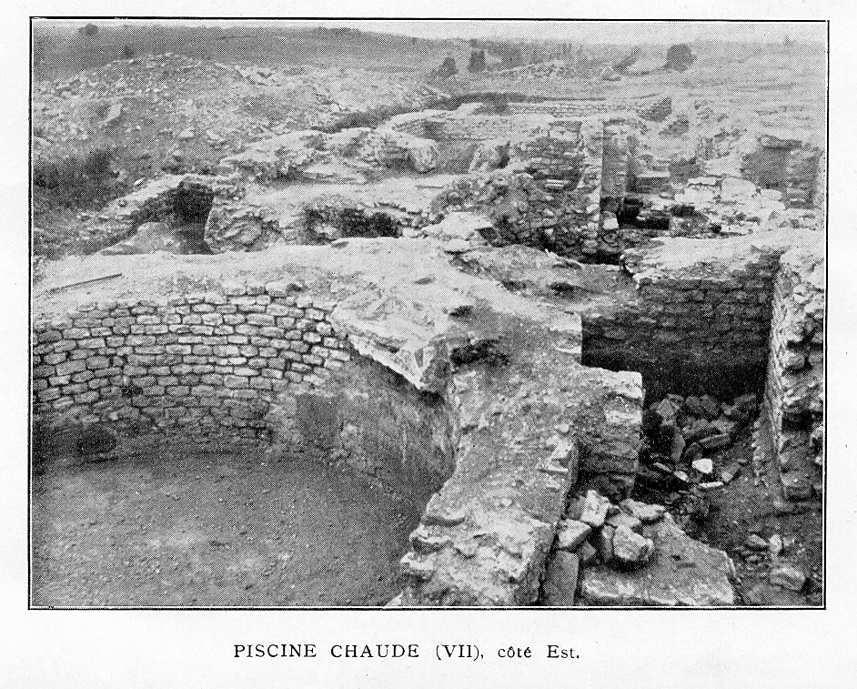
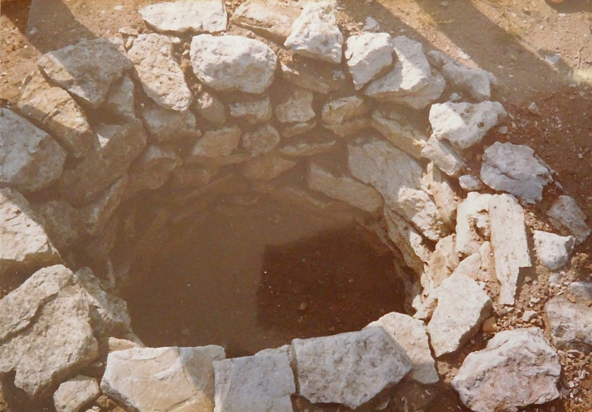

*Je pense qu’il était important de regrouper dans un même livret, l’histoire, ainsi que les informations, les documents et les photos des fouilles de la Villa gallo-romaine de Rouhling. *
Ces fouilles ont été effectuées par Emile HUBER et les textes écrits en collaboration avec Albert GRENIER.
Lors de l’Ecomusée qui s’est déroulée à Rouhling en 1984, Joseph WACK a réalisé une maquette reconstituant la villa. L’analyse de ce sujet qu’il a rédigé à ce moment-là, servira d’introduction.
Raymond LEHMANN - Rouhling
INTRODUCTION
De tous temps, les gens de Rouhling et de Welferding savaient que cette vaste étendue de broussailles située à mi-chemin entre les 2 villages, là où la route venant de Rouhling rejoint le bord de la forêt, cachait les RUINES d'un important domaine agricole. Qu'il datât d'avant l'ère chrétienne pouvait être déduit du NOM du lieu-dit : "HEIDENHAEUSER" - "la maison des païens".
Le premier archéologue à se rendre compte qu'il s'agissait d'une Villa Gallo-Romaine fut le Dr SCHROETER de Sarrebruck lorsqu'en 1846 il put acquérir une LAMPE à Huile en bronze qu'un Rouhlingeois avait déterrée en labourant son champ.
En 1868, l'abbé EMEL, alors curé de Rouhling publia un article dans le « Bulletin de la Société Archéologique de la Moselle » dans lequel il attira l'attention sur la signification de nom de MACHER, donné à ces ruines : du latin MACERIA = mur d'enceinte.
Mais c'est une fois de plus Emile HUBER, l'infatigable chercheur, qui fit entreprendre des fouilles sérieuses en 1889/1891, quelques années après celles de la forêt de Cadenbronn (les tumuli).
UN COMPLEXE RESIDENTIEL et AGRICOLE fut mis à jour : il s'étendait sur une surface de 150 mètres sur 50 mètres.
L'EMPLACEMENT ETAIT JUDICIEUSEMENT CHOISI
L'eau d'une source qui existe encore aujourd'hui fut amenée par une conduite en bois et alimentait la résidence en eau potable, en contrebas, le confluent de deux ruisseaux alimentés par une dizaine de bonnes sources permettait de disposer de l'eau nécessaire, surtout au bétail, la Sarre ne coule qu'à quelques centaines de mètre, la partie principale de la Villa, qui fut fouillée soigneusement, comprenait trois corps de bâtiments (voir plan) disposés en demi-cercle (3 côtés d'un octogone) et à peu près parallèlement aux courbes de niveaux de la côte, en pente vers le sud et l'ouest.
Les bâtiments d'exploitation qui épousaient la déclivité du sol formaient une cour précédant la façade de la villa et protégeaient les habitations du vent du nord, la proximité de grandes forêts au nord était un autre avantage.
UN CERTAIN NOMBRE D'ELEMENTS CONFERENT UN CACHET DE LUXE à cette résidence
Les grandes salles d'apparat, de réunion, de festins, richement décorées avec des marbres blancs, roses, verts et noirs, des mosaïques, des stucs peints ornés de dessins géométriques sur fond blanc, des panneaux vert foncé, bordés de rouge…
L'installation de chauffage par hypocauste. L'air chaud fourni par les 3 fours dont les voûtes ont été mises à jour, circulait sous le plancher et dans les briques creuses des murs, les installations complètes et luxueuses de bains comparables aux thermes des grandes villes, avec une piscine chaude remarquable.
Le péristyle donnait un aspect monumental à la façade. Cette galerie longue de 48 m sur 3,40 m de large, bordait la façade du bâtiment Central et empiétait sur le bâtiment sud. Elle était formée de 18 colonnes de 3,50 m de haut appartenant à l'ordre toscan et supportant un toit en auvent. Le mur du fond était décoré de fresques ou de grands panneaux polychromes. Ce genre de galerie est propre aux villas du nord de la Gaule (notamment à la région de Trèves) en raison de la rigueur du climat.
En dehors du complexe résidentiel que nous venons de décrire, la villa était entourée de bâtiments d'exploitation qui sont ceux d'un grand domaine agricole et d'un important centre de population qui devait se suffire à lui-même, en fait un véritable village.
En poursuivant les fouilles vers le nord, donc jusqu'au bord de la route actuelle, les substructions de vastes bâtiments ont été mises à jour. La présence d'importants gisements de cendres et l'absence de tuiles laissent supposer qu'il s'agissait de bâtiments en bois avec toits de chaume.
D'après les vestiges et objets mis à jour, nous sommes en présence de bâtiments agricoles tels hangars, granges, bergeries, étables…, de logements de colons, artisans et esclaves mais aussi d'ateliers permettant de fabriquer et de réparer tout ce dont la communauté avait besoin : forges, ateliers de charrons, charpentiers, menuisiers, cordonniers, tailleurs… pressoirs, meules, fours…
Tout cela est fort intéressant et nous permet d'imaginer l'animation qui y régnait et ce que fut la vie de tous les jours de ses habitants.
On aimerait en savoir davantage sur les maîtres des lieux et leurs destins.
L'architecture monumentale de la Villa, le développement des appartements destinés à la vie de société, le luxe des décorations et surtout l'installation complète de bains, permettent d'en attribuer la construction à un grand personnage de la cité des Médiomatrices : il avait entièrement adopté les mœurs et les raffinements de la civilisation latine.
Voici ce que M. Emile HUBER en pense : Entourés d'une nombreuse troupe d'amis, ils passent la matinée sous le portique ensoleillé de la façade, à converser de sujets littéraires, artistiques ou religieux. Descendants ensuite dans les jardins, ils s'arrêtent aux palestres, disposés pour les jeux de force et d'adresse ; le bain occupe de longs moments et la journée se termine en festins dans l'un des nombreux Triclinia…
La chasse et la pêche sont également parmi les plaisirs préférés des gaulois… La contrée très giboyeuse et la Sarre qui coulent à peu de distance, offraient champ à ce genre de divertissement.
CES SPLENDEURS FURENT, HELAS, BIEN EPHEMERES.
Pour situer l'existence de la Villa dans le temps, nous avons outre la connaissance de l'Histoire, un repère précieux dans les 157 pièces de monnaies mises à jour par les archéologues :
-
20 pièces pour les 2 premiers siècles de l'ère chrétienne,
-
136 pièces à l'effigie des empereurs et césars ayant régné de 253 à 350, notamment 22 pièces de CLAUDE le Gothique (268 à 270),
-
46 pièces de TETRICUS le Père (268-273), 1 seule pièce est postérieure à 350.
Elles confirment l'Histoire et les inscriptions sur les tuiles et les poteries sigillées : après une première destruction lors de l'invasion barbare de 275, le domaine fut reconstruit.
La Villa luxueuse doit être rattachée à cette époque de prospérité subite du pays trévire due à l'installation de l'Administration Impériale à Trèves.
Le caractère intrinsèque de son architecture rattache la Villa de ROUHLING à la brillante époque de renaissance latine sous CONSTANCE-CHLORE et CONSTANTIN LE GRAND, soit au début du IVème siècle.
Mais les guerres civiles reprirent en 350 et "NOTRE VILLA" succomba à la catastrophique invasion des ALAMANS vers 356. Un demi-siècle de splendeur seulement ! C'est très peu, mais il compte beaucoup dans l'HISTOIRE DE ROUHLING.
Joseph WACK - Rouhling
La Villa Gallo-romaine
Par
Emile HUBER et Albert GRENIER
Sarreguemines Pont-à-Mousson
Les fouilles de la villa de Rouhling ont été exécutées par Emile HUBER durant les années 1890 et 1891. Depuis lors, d’autres études et des fouilles nouvelles, celle du Hérapel, en particulier, ont attiré, retenaient et absorbent encore l’attention de l’infatigable investigateur du pays de Sarreguemines.
Au milieu de sa riche collection du Blauberg, les plans levés par lui, les objets et les monnaies qu’il avait recueillis à Rouhling commençaient à se rendormir du sommeil séculaire qu’avaient brusquement interrompu d’autres fouilles.
La préparation d’une étude d’ensemble des villas gallo-romaines du pays messin nous amena l’an dernier, à lui demander communication des renseignements inédits qu’il possédait.
Avec l’obligeance qu’on lui connaît et le désintéressement qui le porte à mettre à la disposition de tous les chercheurs les résultats de ses propres travaux, il a bien voulu, non seulement nous confier tous les documents qu’il avait amassés, mais même nous charger d’une publication dont il n’avait pas le temps de s’occuper lui-même.
A lui revient l’honneur d’avoir mis au jour ces importants vestiges de la civilisation gallo-romaine dans notre pays.
A l’auteur de cet article, incombe seulement la responsabilité du commentaire dont il a cru devoir accompagner les faits.
Ajoutons que toutes les monnaies trouvées sur l’emplacement de la villa ont été examinées et étudiées par M. Emile HUBER, seul.
Le village actuel de Rouhling est situé à environ 5 kilomètres au nord-ouest de Sarreguemines, dans cette région légèrement accidentée qu’entoure à l’est et au nord la boucle de la Sarre, et que bord à l’ouest la vallée de la Rosselle. Les restes de la période préhistorique, aussi bien que de l’époque gallo-romaine, abondent dans toute cette contrée (1). L’oppidum du Hérapel, de toute évidence, en était le centre (2). Là, aboutissait la voie romaine qui de Metz gagnait la vallée de la Blies, et conduisait à Mayence.
Du Hérapel au gué de la Sarre à Welferding (3) près de Sarreguemines ont été retrouvées les traces d’une voie passant par Théding (4) et Nusswiller. Un diverticulum sans doute rejoignait également la Sarre, par Cadenbronn et Rouhling. C’est en effet à proximité de la route actuelle de Sarreguemines à Rouhling, que se trouvent les restes de la villa qui nous occupe. La distance qui la séparait du Hérapel ne dépassait pas 12 kilomètres. L’abbé EMEL attira sur ces ruines (5) l’attention de la Société d’Archéologie et d’histoire de la Moselle.
T. LIII – E. Huber. Ann. Soc. Hist. Et Arch. Lorrai., 1894, ibid 1899, page 314, 399, et surtout: Le Hérapel d’après le résultat général des fouilles. Ibid. p. 319-339.
Nous citons en entier le passage de l’abbé EMEL qui concerne la villa : « Plus loin sur la route, et à droite de la Forêt à Grosbliederstroff, se trouve le canton du ban qu’on appelle « Heidenhaüser », maisons ou habitations païennes. Là il y avait de temps immémorial des monceaux nombreux et considérables de vieilles pierres, des ruines, des « Macher » enfin dans lesquelles avaient grandi des buissons de pruneliers, etc…
Nos cultivateurs devenus plus soigneux et aussi plus intéressés, se trouvant gênés dans leurs exploitations par ces obstacles qui occupaient un espace considérable de leurs champs, ont cherché à s’en débarrasser : ils ont conduit ces pierres sur la route de Sarreguemines, ce qui était pour eux un double profit : celui de nettoyer et d’agrandir leurs champs, et celui d’avoir bien placé leurs vieilles pierres ; en même temps nous avons obtenu une révélation intéressante.
En voulant nettoyer et niveler convenablement leur terrain, les propriétaires ont rencontré des obstructions sur une étendue assez vaste, des espèces d’appartements avec peinture murale, des caveaux bien conservés, du ciment romain fort luisant, une grande quantité de tuiles et de briques romaines, des anneaux en fer de 0,25 m. de diamètre, de morceaux de marbre fin, dont les moulures étaient fort bien faites et qui avaient sans doute servi à des frises, corniches, etc… ; une grande urne qui a été malheureusement brisée. Sur les tuiles, très grandes et nombreuses, j’ai trouvé en lettres latines ou romaines cette petite inscription Q. VA SABE. Est-ce le nom du tuilier qui les avait fabriquées, ou d’une station … ? Le marbres et les peintures dénotent que cette construction était plus qu’ordinaire. Les « Heidenhaüser » se trouvent séparées de la route romaine par une vallée, et à une distance d’environ 1 kilomètre en droite ligne.
1)Cf.Box. Notice sur les pays de la Sarre et en particulier Sarreguemines et ses environs, Metz 1887
*2)Sur le Hérapel, en attendant la publication définitive que préparer M. E. Huber, voir en particulier : Maxe-Werly et G. de la Noë. Mémoire de la Société Nationale des Antiquaires de France (1894) *
3/ Sur le gué de la Sarre et les ponts de la Blies à l’époque romaine, cv. V. Simon. Mémoires Soc. Arch. et Histoire de la Moselle, 1859.
*4/ Sur la route du Hérapel se dirigeait vers Théding, se rencontrent les restes d’une villa assez considérable, qui n’a pu encore être complètement fouillée. Cf. Ann. Soc. Hist. Et Arch. Lorr. 1902, p. 328, note 1. *
*5/ Le Dr Fried. Schroeter est le premier qui ait cité cette station romaine. *
*Mitteil. D. antiq. Vereins für Saarbrücken, I, page 35, 1846. *
J’ai vu une de ces substructions qu’on était en train de démolir ; c’était une rotonde bordée tout autour de briques minces ayant 0,25 m collées contre le mur à une hauteur de 0,50 m du sol ; le fond était cimenté. On m’assure qu’il existe encore de ces caveaux entièrement conservés ; la charrue passe au-dessus (Bullet. Soc. Arch. et Hist. Mos., 1869, pp. 57-58).
Elles sont situées à environ 3 kilomètres de Sarreguemines au lieu-dit Heidenhäuser (N° 435 et 436 ancien cadastre de Rouhling, section c, Heidenhaüser). Elles sont à mi-côte, à 100 mètres à peu près au sud de la route. Sur le versant qui s’incline doucement vers le sud, elles couvrent une superficie de plus de 150 mètres du nord au sud, et d’environ 50 mètres de largeur. Au sommet de la colline s’étend le bois de Grossbliedersdorf, où se sont trouvés plusieurs tumuli (1).
Au pied, coule le petit ruisseau du Hungerbach. Au-delà de la petite vallée qu’il creuse, sur le versant qui fait face à celui où s’élevait la villa, se retrouvent de nouvelles substructions antiques, aux lieux dits Althof et Atschloss.
A 2 kilomètres dans la même direction sud-ouest, s’élevait, avant la guerre de Trente ans, le village de Heidelingen, dont le nom, très voisin de celui de Heidenhaüser, implique, suivant toute probabilité, la présence dans le sous-sol d’autres vestiges de l’époque gallo-romaine (2).
Plus loin, à l’ouest, s’aperçoivent les hauteurs boisées de Cadenborn, où ont été fouillés 18 tumuli. A l’est se déroule la vallée de la Sarre, avec Sarreguemines au premier plan, tandis qu’au sud s’estompe dans le lointain, la ligne bleue des Vosges.
La partie principale de la villa, la seule qui ait pu être fouillée complètement, comprenait trois corps de bâtiments. Juxtaposés à angles de 130 et de 140 degrés, ils formaient à peu près les trois côtés d’un octogone.
En arrière et au nord, s’étendent jusqu’au sommet de la colline d’autres bâtiments, dont les substructions ont été en partie disparu. La façade de la villa regardait vers l’Est, du côté de la vallée de la Sarre. Cette exposition est celle que recommandent tous les écrivains techniques latins (3), et que nous retrouvons dans la plupart des villas (4).
Il importe en effet de protéger l’habitation des vents froids et de la pluie, et de l’ouvrir, au contraire, largement aux rayons joyeux du soleil levant. La pente de la colline, dirigée à peu près du nord au sud, présentait une difficulté : Construits en ligne droite, et orientés vers l’est, les bâtiments eussent présenté des différences de niveau pas trop considérables.
C’est pour parer à cet inconvénient qu’ils ont été disposés en demi-cercle (Cf. Pl. I.) Seul le bâtiment nord épouse la déclivité du sol. Le bâtiment central et le bâtiment sud, au contraire, situés à peu près à mi-côte, sont parallèles aux courbes de niveau (5). Le bâtiment sud, exposé au nord-est, est en même temps baigné par la lumière du midi et de l’ouest. La masse des deux autres le protégeaient contre les vents du nord. Les bâtiments d’exploitation, se développant à l’ouest et au nord de l’habitation, remplissaient le même office. Ils fermaient en outre, du côté du sommet de la colline, la cour qui précédait la villa. Derrière elle, et jusqu’au Hungerbach, s’étageaient sans doute des jardins.
1/ Tumuli VIII, IX, X. E. Huber, Cadenborn et Rouhling. Mém. Acad. De Metz, 1890-91, 1892-93, p. 1à 20, pl. LI, LIII.
2/ Lettre inédite de l’abbé Fersing, vicaire à Forbach, à M.Huber
3/ Vitruve : De Architectura, I, IV, 1. (Locus) erit excelsus, et non nebulosus, non priosus, regionesque caeli spectans neque aestuosas neque frigidas, sed temperatas. Idem. Cato ; de R. R. KKK. Columelle I, V, 5.
4/ Pour ne prendre d’exemple que dans le pays messin, telle est l’exposition de la villa de St-Ulrich. Wichmann, Ann. Soc. Hist. et Arch. Lorr., 1898, de celles de Sorbey, de Betting, de Teting. Voir les plans de ces villas à l asuite de l’article de Wiehmann, pl. 16.
5/ A la hauteur environ de la courbe 260. La route et la lisière du bois de Grosbliedersdorf sont à 275 mètres de niveau. Le hungerbach coule à 230 mètres.
Le corps de bâtiment central, celui qui faisait face à l’entrée de la cour, est bordé sur toute sa longueur d’une galerie à colonnade. Cette galerie empiète sur la façade du bâtiment sud : elle mesure près de 40 mètres de long, sur 3,40 mètres de large.
Le mur antérieur, épais de 0,90 mètres, ne formait qu’un soubassement supportant 18 colonnes distantes de 2,50 mètres, d’axe en axe. De nombreux fragments des fûts et des chapiteaux ont été retrouvés. Elles appartenaient à l’ordre toscan, et ne diffèrent que fort peu de celles qui ont été retrouvées dans le voisinage, au Hérapel (Cf.Pl.III) Hautes de 3,50 mètres, ces colonnes mesurent 0,43 mètre de diamètre inférieur, et 0,40 mètres de diamètre supérieur, sans aucun renflement au milieu du fût. La base, large de 0,65 mètre, haute de 0,25 mètre, se compose de deux tores séparés par une scotie, le tout surmonté d’une gorge et d’une moulure. Un gorgerin sépare le chapiteau du fût.
Deux gorges, surmontées chacune d’un annelet et séparées par une moulure, soutiennent l’abaque, et dessinent le profil du chapiteau. La sveltesse élégante de ces colonnes les distingue profondément des lourdes colonnettes à fût renflé, aux profils massifs et fortement accentués, qui soutiennent la galerie du péristyle intérieur de la villa de St Ulrich (1). L’entablement de cette colonnade devait se composer, suivant les règles de l’ordre toscan, de deux pièces jumelles de bois supportant, au lieu de corniche, une toiture formant auvent (2).
Par une curieuse asymétrie, les murs pleins de l’aile nord empiètent d’une longueur de 2,35 mètres sur la galerie de façade du bâtiment central.
La colonnade, par compensation, suivant l’angle formé par l’aile sud, se continue en avant d’elle sur environ la moitié de sa longueur. Un mur plein formait le fond de ce portique. Il était décoré sans doute de fresques ou de grands panneaux polychromes (3).
Les murs transversaux dont on remarque les fondations dans la longueur de la galerie ne devaient sans doute pas en dépasser le sol. Il est difficile de préciser la destination de ceux qui, en avant de l’aile sud, dessinent dans le sous-sol un espace de 3,70 mètres. Celui, au contraire, qui se rencontre aux deux tiers environ de la façade du bâtiment central, marquait la limite d’une cave. XVI.
Nous la décrivons plus loin.
Cette façade de la villa de Rouhling diffère absolument de celle de la villa de St Ulrich. Elle se rapproche plutôt, quoique moins grandiose de celle de la villa de Téting. Elle présente en tous cas un caractère de parenté indéniable avec l’architecture de la plupart des grandes villas de luxe du pays trévire. Nous avons déjà parlé du portique qui précède la villa d’Oberweiss.
La villa de Nennig également, est entourée tout entière d’une semblable colonnade (4). A Blankenheim, dans l’Eifel, la véranda qui forme façade mesure plus de 60 m (5). Elle atteint les mêmes dimensions à Leutersdorf (6). La forme allongée du plan et la présence de cette galerie antérieure sont les caractéristiques que Hettner reconnaît aux grandes villas des environs de Trèves (7). La villa de Rouhling appartient à la même famille.
1/ Cf. Ann. Soc. Hist. et Arch. Lorr., 1898, pl. XIV, fig.1
2/ Choisy, Histoire de l’Architecture, 1, p. 379, 380.
3/ Le mur de fond d’un portique analogue, formant la façade de la villa d’Oberweiss (près Bittburg, dans l’Eifel) était décoré d’une fresque représentant des amours. Bonner Jahrbücher. L XII, p. 85. LXIV, p. 109. Trierishe Zeitsch, 25 mars 1978.
4/ Wilmowsky, Die römische Villa zu Nennig, 1868, et travail manuscrit postérieur conservé dans les archives de la Gessellschaft f. nützliche Forschungen, au musée de Trèves. Id. Die Römische Moselrillen zwischen Trier und Nennig, Trèves 1878.
5/ Bonn, Jahrb. LVII p. 240
6/ Jahresberichte d. Gesellsch. f. mützl. Forsch. 1878-81 p. 52ss.
7/ Hellner. Zur Cultur von Germanien u. Gallia Belgien. Westd Zeitsch. II. p. 15.
Ce genre de façade ne se retrouve pas, autant que nous sachions, dans les villas des parties méridionales de la Gaule, ni de l’Italie. Trop exposé au soleil, ce portique antérieur y est remplacé, comme à St-Ulrich, par un péristyle entourant une cour intérieure. Il n’eût servi en effet qu’à chauffer les appartements, en y faisant pénétrer la chaleur emmagasinée sous la galerie.
Cette disposition architecturale eût été un contresens dans les pays chauds ? C'est précisément ce qui l'imposait, pour ainsi dire, sous le climat rigoureux du nord de la Gaule. Elle fournissait dès le matin un auditorium ensoleillé.
Le toit avançant protégeait également du vent et de la pluie les appartements placés derrière la galerie. La hauteur de la colonnade y laissait cependant pénétrer largement la lumière. Ce sont des nécessités analogues qui, dès l’époque la plus ancienne, avaient suggéré, aux Germains barbares, l’idée de protéger la façade de leurs huttes par une Vorhalle de toute la largeur de l’habitation (1).
Dans toutes les villas du genre de celle de Rouhling, au milieu du portique qui forme façade, s’ouvre une grande salle d’apparat. Les substructions, trop profondément détruites en cet endroit, n’ont pas permis de constater, à Rouhling, la présence d’un seuil au milieu du portique.
Mais nous trouvons, occupant le centre de l’habitation, une grande salle, sorte d’atrium couvert, absolument analogue à celle qui se rencontre au même endroit à St Ulrich et à Téting (2). Elle mesure 7,50 mètres de long sur 6 mètres de large. Aucun vestige certain ne nous permet d’en préciser la décoration.
Nous constatons seulement que le mur, qui en forme de fond, est renforcé par deux épais contreforts qui font plus qu’en double l’épaisseur. L’un mesure 2,55 mètres de long, l’autre 2,65 mètres. Ils laissent entre eux un intervalle de 2,30 mètres. La présence de ces forts massifs de maçonnerie peut s’expliquer de deux façons : Ou bien ils servaient de fondations à une construction élevée d’un ou de plusieurs étages. Ou bien encore, ils étaient le soubassement d’une ou de deux colonnes encadrant la porte.
Derrière cette première salle devaient, en effet, se trouver d’autres appartements. Tout vestige en a disparu ; on rencontre seulement, 12 mètres plus loin, un long mur, qui semble avoir fermé l’habitation du côté de l’ouest. Il faut donc nous rendre compte que nous ne possédons guère que la partie antérieure des bâtiments de la villa.
L’atrium couvert, donnant au centre de la façade, était tout entier construit sur hypocauste. C’est là une particularité qui semble exceptionnelle. Cette salle réservée à la parade, plus qu’à l’habitation, n’était pas, en général, munie d’un système de chauffage régulier. Des trappas, en général, munie d’un système de chauffage régulier. Des traverses devaient suffire à en rendre la température supportable.
1/ cf. Henning, Das deutsche Haus in seiner historischen Entwickelung Strasb. &__é
2/ A St-Ulrich, sale 4, pl. 13. Voir le plan de la villa de Teting. Pl. 16. Ann. Soc Hist et Arch. Lorr. 1898. Cf. également les plans des villas de Leutersdorf et d’Oberweiss (Références données plus haut), au musée de Trèves.
Ici au contraire, suivant la disposition ordinaire des hypocaustes, le sol, en épais ciment, portait sur de larges dalles en brique, reposant sur de petits piliers formés de briques plus petites superposées. Une couverture, placée en sous-sol, mettait l’hypocauste en communication avec le Pracfurnium, placé sur le côté en P3. Dans cette petite cour longue de 2,20 mètres, large de 2 mètres, on a retrouvé, en effet, les débris de la voûte d’un four. Le feu s’allumait de l’extérieur, de la grande cour XV.
C’est en effet, une cour de service qu’il faut voir dans ce vaste espace de forme irrégulière, qui s’étend au nord de la salle centrale, et communique avec elle par une porte large de 2 mètres. Cette cour était destinée à donner du jour aux appartements placés en arrière et dont les fondations ont complètement disparu. Sur elle ouvraient sans doute les communs et les celliers, représentés par les deux salles qui la bordent au nord, et par la cave XVI, qui s’étend sous la galerie de façade. A cette cave on accédait par un couloir coudé C contenant, soit un escalier, soit plutôt un simple plan incliné, terminé par quelques marches ménagées dans l’épaisseur du mur de fondation. (Voir pl.II. Coupe de la cave XVI de la planche I)
La cave, longue de 13,60 mètres sur 3,65 mètres de large, était éclairée par trois soupiraux. On en retrouve le dessin pl. II, fig. 6. Elle est garnie en outre, comme toutes les caves de l’époque gallo-romaine, de petites niches quadrangulaires. Trois de ces niches sont placées dans le même mur que les soupiraux et alternent avec eux. Elles mesurent à peu près 0,45 mètres de large sur autant de profondeur. D’autres niches étaient pratiquées dans le mur antérieur. On en a reconnu deux ou trois, mesurant 0,65 et 0,80 mètres de large. De nombreux fragments de meules ont été découverts dans cette cave. Toute cette partie nord du bâtiment central contenait sans aucun doute les communs et les offices.
Au sud de la grande salle centrale se trouve une nouvelle cour. Des portes dont il a été impossible de retrouver l’emplacement, la mettaient évidemment en communication. 1° avec la salle centrale, 2° avec la galerie antérieure.
Le petit espace carré de 3,15 mètres de côté, dessiné dans la cour par des fondations qui n’ont guère plus de 0,20 mètres d’épaisseur, était sans doute une cage d’escalier. Cette épaisseur de 0,20 mètre, est à peu près celle de petites briques. Elle suffisait également pour soutenir des parois de bois. La présence de cette construction confirme l’hypothèse que cette partie de la villa supportait un étage.
Les trois autres salles de dimensions moyennes, qui occupent la partie sud de ce bâtiment doivent représenter des Triclinia, salles à manger, ou salles de conversation. Elles sont trop vastes pour être des appartements. Les chambres d’habitation proprement dites étaient sans doute reléguées dans la partie postérieure de la villa, dont les substructions ont presque entièrement disparu. Deux de ces salles prenaient jour sur la cour intérieure. L’exposition en était donc au nord, c'est-à-dire peu favorable. L’une d’elles devait en même temps ouvrir sur la galerie, et l’autre vers l’extérieur, au sud-ouest. L’angle rentrant formé par la troisième, devait être, en hiver, un endroit tout particulièrement chaud et agréable. Nous pouvons donc voir, dans ces pièces si différemment exposées, ces Triclinia que Vitruve recommande d’aménager spécialement pour l’hiver et pour l’été : « les Triclinia d’hiver, dit-il, doivent prendre jour à l’ouest, c’est vers le soir, en effet, que l’on y a besoin de lumière ; en outre, la splendeur du soleil couchant produit en même temps de la chaleur, et tiédit l’atmosphère du soir… Les Triclinia du printemps et de l’automne doivent être exposés à l’est. Les fenêtres, ouvertes à l’éclat du soleil qui s’élève dans le ciel, permettent à la salle de se chauffer peu à peu. La température y est douce au moment où l’on a coutume d’y venir. Les Triclinia d’été sont orientés vers le nord. Protégés contre l’ardeur du soleil, ils demeurent toujours frais ; leur usage n’est pas moins salubre qu’agréable (1).
1/ Vitruve, VI, IV, 1-2
Cette partie, réservée à l’habitation, de la villa de Rouhling, reproduit assez exactement, on le voit les dispositions générales de la maison romaine. Au centre s’ouvre l’atrium, la création la plus caractéristique de l’architecture domestique latine. Les atriums d’Italie sont sans doute assez différents de ceux que nous rencontrons dans le pays messin. Ils sont généralement ouverts à leur partie supérieure, et ressemblent autant à une cour entourée de larges galeries couvertes qu’à une véritable salle. A Rouhling, non seulement l’atrium est complètement couvert, mais il est chauffé. Profondément transformée, cette pièce n’en reste pas moins le cœur de toute l’habitation.
Tandis que la maison romaine des villes s’étend en profondeur, l’espace, moins étroitement mesuré à la campagne, permettait aux villas de développer majestueusement leurs bâtiments en largeur. Immédiatement sur la façade ouvrent les appartements d’apparat. Ils représentent le Cavaedium, le Tablinum et les ailes de la maison urbaine.
Les appartements privés sont placés en arrière, plus à l’écart, toujours suivant les prescriptions des architectes latins (1). La façade monumentale, le vaste atrium, indiquent que le propriétaire de la villa était accoutumé au luxe fastueux de la civilisation latine.
Une telle habitation ne peut être que celle d’un grand seigneur, entouré non seulement d’une foule nombreuse de serviteurs et de clients, mais suivi, jusque dans ses résidences campagnardes, par une troupe de complaisants et d’amis (2).
Les Bains de la Villa de Rouhling
Les habitations de luxe, construites à la campagne par les nobles romains, formaient un tout complet. Elles étaient organisées pour suffire à tous les besoins de la vie. Or, un des besoins les plus profondément ancrés dans les mœurs lorraines était celui d’un établissement de bains. Toute grande maison des villes possédait ses bains. A plus forte raison devait-il en être de même à la campagne. Et de fait, dans aucune des villas qui ont pu être étudiées jusqu’ici, même dans les plus modestes, ne manque cet élément indispensable de toute habitation romaine. Ces bains de la villa de Rouhling, moins développés que ceux de la villa de St-Ulrich, présentent une disposition plus claire. Les substructions qui ont été retrouvées permettent de se figurer, avec assez d’exactitude, le type général de ces thermes privés.
Remarquons tout d’abord que, conformément à l’usage général et aux prescriptions des architectes anciens, ils sont exposés au sud et à l’ouest (3). Leur emplacement, à l’extrémité la plus basse de la villa, permettait également l’écoulement de l’eau employée, sans que les conduites produisissent de l’humidité dans le reste de l’habitation.
C’est là également une disposition qui se remarque dans toutes les villas. L’entrée des bains était placée, semble-t-il, à l’extrémité de la galerie qui servait de façade à la villa. Par une porte large de 1,50 mètre, on accédait d’abord à deux petite salles, longues l’une et l’autre, de 3,35 mètres, larges, la première de 2 mètres, la seconde de 1,50 mètres.
Dans celle-ci se tenait sans doute le capsarius, esclave préposé à la garde des objets précieux dont on se défaisait avant d’entrer dans le bain, et qui remettait au baigneur les strigiles et autres instruments dont il allait se servir. Puis, par un corridor tournant vers la gauche, et large d’environ 2 mètres, on accédait, en descendant quelques marches, à un petit pavillon quadrangulaire de 3,50 sur 3,20 mètres.
1/ Vitruve VI, V, 1. Animadvertendum est quibus rationibus propria loca patribus familiarum et quemadmodum communia cum extraneis aedificari debeant.
2/ Vitruve VI, V, 2 : « Nobilibus, qui honores magistratusque gerendo praestare debent officia civibus, faciunda sunt vestibula regalia alta, atria et peristyla amplissima, silvae ambulationesque ad decorem majestatif perfectae.
3/ Vitruve. V. X. 1 (Balneis) primum eligendus est locus calidissimus, id est, aversus ab septentrione et aquilone. Ipsa autem caldaria et tepidaria, lumen habeant ab occidente hiberno,sin autem natura loci impedierit, utique a meridie, quod maxime tempus lavandi a meridiano ad vesperum est constitutum.
Ce pavillon ouvrait à l’extérieur de la villa. Avec cette partie des jardins, il était sans doute réservé aux exercices physiques, palestre, jeux de disque, courses, si fort en bonheur chez les Romains jusqu’aux derniers temps, et qui précédaient le bain, par le corridor IX, large de 3,50 mètres, et dont on n’a retrouvé les fondations que sur une longueur d’environ 10 mètres.
La salle IV à laquelle on aboutissait, ainsi que la salle voisine, III, étaient établies sur caves voutées communiquant entre elles. Ces sous-sols, sans aucune issue vers l’extérieur, n’avaient d’autre but que de protéger les salles contre l’humidité, dont le voisinage des masses d’eau des bains devait imprégner le sol. Ils sont absolument différents d’hypocaustes. Ni l’une ni l’autre de ces salles n’était chauffée. En IV, la plus grande, on peut voir l’apodytérium, en III, le frigidarium, la salle froide, par laquelle commençait le bain.
Cette salle III est, en effet, en communication avec une première piscine circulaire (IVb). C’était la piscine froide (voir les planches phototypiques 2 et 7). Profonde de 1,50 mètres au dessous du niveau de la salle froide, elle est pavée de dalles de marbre blanc de 0,20 x 0,30 de côté. Les parois étaient formées de briques placées en parement, recouvertes d’un épais enduit de stuc. Le diamètre de la piscine est d’environ 5 mètres (4,90 et 4,85). On y accédait directement du frigidarium, d’abord par une cuvette rectangulaire, large de 0,95, puis par deux marches placées sur le côté, hautes de 0,35 chacune. Il est difficile de préciser l’endroit par où l’eau entrait dans le bassin. La sortie s’en effectuait un peu à l’est du diamètre E. La conduite tournant vers l’Ouest allait rejoindre la conduite d’écoulement XIV du bain chaud. La source, qui sans doute fournissait l’eau nécessaire, était celle qui existe encore dans le bois de Grosbliedersdorf, au sommet de la colline.
Du bain froid, par une progression rendue aussi douce que possible, on passait au bain chaud. La salle III communiquait avec les salles chaudes I et II. La communication avec I est seule visible. Une autre porte, dont on n’a pu retrouver le seuil, conduisait certainement en II. Cette salle plus éloignée que la salle I du praefurnium, moins chaude par conséquent, était le tepidarium (salle tiède) : la salle I, à laquelle on pouvait sans doute accéder directement en sortant de II, était le caldarium (salle chaude).
Le sol de l’une et l’autre salle est établi sur pillettes ordinaires d’hypocauste. Le tepidarium mesure 5,80 m sur 4,50 mètres. Son hypocauste s’est retrouvé tout entier en excellent état. (Voir gravure N°6 : l’hypocauste s’aperçoit au second plan.) La construction ne présente aucune particularité. L’air chaud ne lui parvenait, par un canal coudé, qu’après avoir traversé l’hypocauste de I. L’écartement des deux rangées de pillettes, entre lesquelles débouche de canal, avait pour effet de faciliter l’entrée des gaz chauffés. Le tirage était établi suivant le procédé ordinaire, par des tuiles creuses revêtant les parois. Il est au contraire assez difficile de se rendre un compte exact des dimensions du caldarium. Seules, quelques unes des pillettes qui en soutenaient le sol ont pu être retrouvées. Sur son emplacement, à une époque postérieure à la ruine de la villa, fut établi un four à chaux. Toute cette partie des bains fut donc bouleversée de fond en comble. Nous pouvons constater cependant que l e praefurnium, qui en assurait le chauffage était établi en VI (Voir gravures 5 et 6).
On aperçoit à la partie inférieure du praefurnium le trou par où se faisait le feu (1). Cette bouche du four est recouverte, en guise de voûte, par deux énormes pierres de lave, dessinant à peu près le fond d’une grande cuve. Ce sont ces pierres qui recevaient sans doute les récipients de cuivre ou de plomb, où l’on chauffait l’eau nécessaire aux bains. Des pierres de lave, plus petites, il est vrai, mais formant la naissance d’une voûte circulaire au-dessus d’un praefurnium, se retrouvent de même aux Thermes publics de Ste-Barbe à Trèves, et remplissaient le même office qu’à Rouhling (2).
*1/ Sur la gravure 5, ce trou semble bouché par des briques placées de champ. La gravure 6 présente ce même praefurnium de profil. *
2/ Hettner. Zu den Römisch. Altertümern r. Trier u. Ungegend. Westd. Zeitsch. X. p. 270.
Communiquant avec le caldarium, se rencontre une seconde piscine circulaire. C’est la piscine chaude. Son diamètre, un peu moindre que celui de la piscine froide, ne mesure que 4,25 mètres (voir planche phototypique 1 et gravures 3 et 4). On y descendait par un escalier dont on aperçoit encore les dernières marches. De part et d’autre de cet escalier ont été trouvées encore en place, contre la paroi, trois rangées de briques creuses. Dans le fond de la piscine, gisaient de forts blocs de ciment épais d’environ 0,15 mètre. C’étaient les restes d’une voûte légèrement bombée.
De larges briques posées à plat en formaient comme l’armature, et maintenaient l’épaisse couche de béton qui, en séchant, était devenue un bloc homogène. Cette voûte pesait de tout son poids contre les parois de la piscine. Il nous faut donc admettre que les briques creuses, dont quelques-unes ont encore été retrouvées en place, ne les garnissaient pas entièrement. Elles eussent été écrasées par la pression. Elles ne formaient sans doute que des conduites, composées de trois ou quatre rangées de briques creuses, ménagées en certains points des parois. Ces conduites suffisaient pour assurer le tirage et porter à une température moyenne la paroi tout entière. Pour soutenir la voûte et la garantir de tout glissement, un parement de briques garnissait probablement la partie inférieure de la piscine. C’est là un genre de construction courant dans la technique latine, pour l’établissement de voûtes légères et d’un diamètre peu considérable (1). Nous n’en connaissons cependant pas d’autre exemple dans les villas gallo-romaines du nord-est de la Gaule.
La piscine elle-même était donc établie sur un sous-sol. La hauteur du sous-sol variait entre 1,20 mètre sur les bords et 1,50 mètre au centre. Il nous est difficile de juger de la profondeur du bassin lui-même.
Ses bords pouvaient fort bien être plus élevés que le sol du caldarium. Quelques marches pouvaient permettre facilement aux baigneurs d’y atteindre (2).
Le sous-sol du bassin représentait une sorte d’hypocauste et servait à en assurer le chauffage. Il était, en effet, en communication avec un praefurnium placé en P2. On voit encore très nettement l’entrée du canal qui amenait la chaleur sous la piscine (voir gravure 4). Une quantité considérable de cendres et de charbon ont été retrouvés sur l’emplacement de ce praefurnium (3). Le sol et les parois du bassin étaient donc eux-mêmes chauffés. Ils n’auraient pas suffi sans doute pour porter à eux seuls l’eau du bain à la température voulue. Ils évitaient tout refroidissement de l’eau qui arrivait chaude des bassines placées en P.
Des conduites qui amenaient cette eau et aboutissaient normalement à la partie supérieure du basin, aucune trace n’a pu être retrouvée. La conduite d’écoulement s’est au contraire conservée.
C’est un large caniveau dallé, que rejoignent les tuyaux d’évacuation de la piscine froide (XIV, et gravure 4). Il se continue en dehors de la villa suivant le pointillé indiqué pl. 1, et allait sans doute se déverser sans le Hungerbach.
Si la piscine froide pouvait n’être couverte que d’une toiture légère, peut-être même d’un simple velum, qui permettait en été de la transformer en bain à ciel ouvert, la piscine chaude au contraire devait être surmontée d’une voûte solide. C’est ce qu’indiquent ses soubassements massifs. Une coupole était d’ailleurs la couverture logique de toutes les salles chaudes ; c’est celle que recommande Vitruve. Une ouverture était laissée à la clef de voûte, et une soupape, manœuvrée par des chaînes, permettait l’évacuation de la vapeur et le réglage de la température (4).
1/ Choisy, Hist. de l’architect. T. I, p. 524-525
2/ Même disposition pour les piscines chaudes, places dans le caldarium des Thermes publics de Trèves. Cf. Hettner. Zu d. rö. Alterth. Westd. Zeitsch.X. p. 269.
3/ Non moins que l’exemple des Thermes de Trèves, celui des bains de Rouhling va directement contres les assertions récemment émises par M. Krell. Il prétend que l’eau des bains était exclusivement chauffée dans des bassines et que jamais on ne trouve d’exemple de baignoires chaudes. Altrömische Heizungen. Voir d’ailleurs la réfutation développée de toute cette théorie. Brauweiler. Die Thermen zu Trier u. ihre Heizung. Westd. Zeitsch. 1904, I p. 11. Ss
4/ Vutryve V, X, 5… mediumque lumen in hemispherio relinquatur, ex eoque clupeum aeneum (une soupape en airain) catenis pendeat, per cujus reductiones et demissiones perficietur sudationis temperatura. Ipsumque ad circiunm fieri oportet, ul aequaliter a medio flammae vaporisque vis, per curvaturae rotundationes pervagetur.
Le petit espace quadrangulaire, situé entre les deux piscines, semble avoir contenu un escalier. Des salles, auxquelles il aboutissait, on n’a retrouvé nul vestige. Différents locaux étaient cependant encore nécessaires pour compléter l’installation des bains : c’étaient entre autres la sudation et le laconicum, petites salles très chaudes destinées aux bains de vapeur ; le destrictarium où l’on s’essuyait, l’unctorium où l’on se parfumait d’essences (1). Ces salles ne pouvaient faire défaut aux bains de Rouhling. Peut-être malgré leur situation à l’écart, les bâtiments placés au sud-ouest répondaient-ils à cette destination. On n’en a retrouvé qu’une petite salle (g) de 3,50 mètres sur 3,40, chauffée par un nouveau praefurnium P4).
L’étroit couloir qui borde la partie ouest des bains (voir planche phototypique 1), semble n’avoir été qu’un corridor de service. La pente, très rapide en cet endroit, rendait nécessaires les trois petits contreforts qui en soutiennent le mur extérieur.
Les contreforts indiquent néanmoins que le mur devait être assez élevé. Ce que nous en apercevons ne devait être probablement qu’un sous-sol. Sans doute une galerie largement ouverte du côté de l’ouest, et placée au-dessus de ce corridor, ramenait des bains dans la cour X et dans les grandes salles qui en sont voisines.
Cette cour devait être en communication directe avec le portique de façade. Par une porte de 2,50 mètres, elle donnait accès à la salle XI, précédée elle-même de deux autres salles plus petites, disposées de part et d’autre d’un passage aboutissant également à la galerie antérieure ; La grande salle, large de 6,80 mètres sur 11 mètres de long, est la plus vaste de toute la villa. Il faut y voir sans doute, ainsi que dans les deux autres qui l’accompagnent, les lieux de réunion où l’on assemblait au sortir du bain, pour jouer, lire, déclamer, et les Triclinia destinés aux grands festins du soir.
Les bains, et les appartements qui en forment le complément, étaient, autant que nous pouvons en juger, luxueusement décorés. Les marbres s’y retrouvent en grande abondance ; marbres de toutes couleurs, blancs, roses, verts, marbres noirs différemment veinés, tous malheureusement en menus fragments. Ils formaient le revêtement des murs. Les petits cubes de mosaïques ne manquent pas non plus. Ce sont, en particulier, de petits dés noirs et blancs, usés par le frottement. Ils garnissaient le sol. D’autres cubes en verre et de couleurs fort diverses, bleus, verts, rouges, etc., ne présentent aucune surface permettant de juger qu’ils étaient placés sur le sol. Ou bien les mosaïques qu’ils composaient étaient de date beaucoup plus récente et n’avaient encore pu être usées, lorsque survint la ruine de la villa, ou plutôt elles formaient le revêtement des parois. Les stucs peints étaient également fort nombreux. Leur ornementation consiste particulièrement en dessins géométriques tracés sur fond blanc. D’autres semblent avoir appartenu à des panneaux vert-foncé, bordés de brun rouge. Il est impossible, dans l’état de destruction où ils ont été retrouvés, de discerner avec précision les motifs qu’ils pouvaient représenter.
Cet établissement de bains de la villa de Rouhling n’a rien des proportions colossales des Thermes publics d’une grande ville. Il contient cependant toutes les parties essentielles d’une installation de ce genre. L’état relativement très satisfaisant de sa conversation nous permet de suivre, avec une netteté parfaite, le plan de cet accessoire indispensable de toute riche maison romaine. Par lui, nous pouvons nous rendre un compte très exact de ce qu’étaient, d’une façon générale des bains dans une grande villa de Luxe. Nous y trouvons cependant une particularité qui nous semble valoir la peine d’être signalée. C’est la présence de deux grandes piscines, l’une destinée aux bains froids et l’autre aux bains chauds.
1/ Sur les établissements de bains antiques, voir outre Vitruve, V.X. Pline le Jeune, Epist... II. 17. Palladius, de Re Rustica, I, 40. Lucien, 'Innias n Bayaveiov (écrit en grec). Sans parler de nombreuses descriptions modernes de Thermes publics, voir sur les établissements de bains dans les villas. Leibnitz, Die röm. Bäder bei Badenweiler (pays de Bade), 1856. Näher, die römischen Bauanlagen in d. Zehntlanden. Bonn. Jahrb. LXX.X, p. 70 sqq.
L’existence de piscines froides est absolument normale dans les bains de la plupart des villas. On en peut même compter trois ou quatre sur le plan de la villa de Conz, près de Trèves (1). Pour nous en tenir à des exemples d’un caractère moins grandiose, nous citerons seulement, comme type de ce genre de bassins, celui de la villa de St-Ulrich (2). Il est également de forme ronde, dans une salle carrée, dont les angles sont occupés chacun par une petite niche de forme demi-circulaire. Son diamètre mesure environ 5 mètres. Plus souvent ces bassins sont simplement quadrangulaires terminés d’un côté par une large abside. L’installation en est partout la même et relativement assez simple.
Une piscine chaude était, nous l’avons vu, beaucoup plus difficile à établir. Aussi les bains chauds se prennent-ils le plus généralement dans une simple baignoire, analogue de celle qui sert de fonts baptismaux à la cathédrale de Metz. Des baignoires analogues, plus souvent encore leurs débris ont été fréquemment retrouvées dans les bains des villas (3). Parfois, par une disposition qui mérite d’être décrite, les parois de ces baignoires étaient chauffées.
A Wasserhesch près de Trèves, notamment, nous trouvons un exemple de cet intermédiaire entre la simple baignoire et la piscine chaude. Il se compose d’un bassin de marbre blanc, long de 11 pieds, large de 5, profond de 3, ayant absolument la forme d’une simple baignoire. Il est entouré de trois gradins de marbre, dont le dernier, plus large, forme la schola de la piscine. Le tout repose sur un hypocauste, dont les piliers de taule différente soutiennent la baignoire comme le sol de la salle au milieu de laquelle elle se trouve (4).
Ces piscines chaudes telles que nous les rencontrons aux thermes de Ste Barbe à Trèves ou à Rouhling, ne sont qu’un agrandissement de ce genre de bassins (5).
Nous ne connaissons jusqu’ici que la villa de Friesdorf, où ait été reconnue d’une façon certaine la présence de deux piscines. Cette villa de moyennes dimensions présentait des traces d’un luxe tout particulièrement fastueux. L’établissement de bains y était relativement très développé (6).
On ne saurait donc s’étonner d’y trouver les mêmes installations que dans les bains publics d’une grande ville. M. Huber nous envoie au dernier moment les plans et les coupes d’une piscine chaude, découverte en 1823 à Guidingen (ou Güdingen), sur la rive droite de la Sarre, entre Sarreguemines et Sarrebruck.
Elle est construite sur hypocauste ordinaire, les parois en sont garnies de bétons et de briques creuses. Partout ailleurs, dans les établissements de bains des villas, les petites salles chaudes que l’on rencontre, qu’elles soient de forme circulaire, comme à Wiltingen, ou, comme beaucoup plus souvent, de forme quadrangulaire et terminées d’un côté par une abside, représente le Laconicum ou le sudatorium, et non des piscines chaudes.
Ce plan est au musée de Trèves. Cette villa semble avoir été la propriété particulière des empereurs résidant à Trèves. Deux constitutions du Code Théodosien datées de Confluentes (Conz au confluent de la Sarre et de la Moselle) établissent que Valentinien y résida en 371. Cf Ausone, Apsella, p. 367. 369.
Ann. Soc. Hist et Arch Lorr. P 182-183, pl. 18 salle 88
*Notamment à Wiltinger sur la Sarre dans la sall n Wimowsky, Jahresberichte d. Gessellsch. F. nützi. Forsch. 1856. p. 61. *
Wilmowsky, Jahresb. D ; Gesellsch. f. nützl. Forsch. 1807.
Le caldarium des Thermes de Trèves est entouré de 4 piscines chaudes quadrangulaires, longues de 10 mètres, larges de 4 ou 5. On y rencontre en outre, un vaste bassin de 20 mètres de long sur 11,20 de large, reposant tout entier sur hypocauste. Hettner. Zu den röm. Altertümern c. Trier u Ugegend Westd Zeitsch., X, p. 269 et 271.
La villa de Friesdorf est située près de Bonn. Cf. Ausen Wert Bonn Jahrb, LXXXI, p212 sqq
Ces deux bassins, qui constituent l’élément caractéristique des bains de la villa de Rouhling, nous permettent d’y voir un exemple tout particulièrement soigné d’établissements de ce genre. Cette constatation confirme l’impression de luxe et de grandeur que nous avait déjà faite la façade monumentale, aussi bien que l’étude des bâtiments qui occupent le centre de la villa.
Aile nord de la Villa et Bâtiments d’exploitation agricole.
De l’aile nord de la Villa et Bâtiments d’exploitation agricole. De l’aile Nord de la villa, l’angle attenant au corps de bâtiment central seul a pu être retrouvé. Le reste s’en prolongeait vers le sommet de la colline. Toute trace des substructions a disparu. L’aile tout entière semble avoir été précédée par un long couloir (XVII), de même largeur que la galerie qui forme façade en avant du bâtiment central. Par la petite salle de forme irrégulière qui empiète sur cette façade, l’aile nord semble avoir été mise en communication avec les communs placés au Nord de la cour XV.
Nous rencontrons ensuite une petite salle, de la largeur du corridor, et longue seulement de 2,46 mètres. Plus, sur une longueur de 20 mètres au moins, nous pouvons suivre les fondations des murs du couloir qui devait faire communiquer entre elles les très vastes salles placées derrière lui.
Etant données les dimensions de ces salles et les outils de toutes sortes qui s’y sont rencontrés, elles ne peuvent guère représenter que des granges, étables, ateliers en communs réservés à l’exploitation agricole.
Au nord-ouest et au nord-est de cette partie de la villa se sont encore rencontrées les substructions d’autres bâtiments, qui se prolongent jusqu’à la route actuelle de Sarreguemines à Rouhling.
Le premier (pl. 1bis) situé en arrière de l’aile nord, est parallèle au corps de bâtiment central et dont on ne retrouve plus que l’angle P. Un amoncellement de pierres et de débris marque seul l’emplacement du reste des constructions.
Les autres salles, que l’on rencontre plus au nord, sont formées par un mur N long d’une vingtaine de mètres, coupé par d’autres murs perpendiculaires. Les trois premières A, A’, et A’’ sont de beaucoup plus petites que les autres. Par suite de la déclivité naturelle du sol, elles se trouvent à un niveau inférieur de 0,70 mètre (voir coupe pl. I bis).
L’angle sud-ouest du mur de la salle A atteint une épaisseur de 0,85 mètre, tandis que les autres parties ne dépassent pas 0,60 ou 0,70 mètre. Cette épaisseur était sans doute destinée à soutenir le remblai de pierres et de brocailles qui avait été nécessaire pour égaliser le sol. Ces 3 pièces étaient sans doute des appartements d’habitation.
Les salles B, D, E voisines sont beaucoup plus vastes. Elles mesurent respectivement 9 mètres – 6,25 et au moins 8 mètres de large, leur longueur restante indéterminée. Le mur qui les fermait à l’ouest a en effet disparu. Mais, si l’on admet que les portes de 1,60 mètres qui les réunissent étaient percées au milieu des parois, on peut leur attribuer à peu près 20 mètres.
Le mur N ainsi que les autres, sont construits sur des enrochements de brocaille, servant de fondations et protégeant en même temps les parois contre l’infiltration de l’humidité du sol. C’est là une disposition courante dans la technique romaine. (Voir pl. 1bis, fig. 2).
Ces substructions légères ne pouvaient former que le soubassement de parois en bois. L’abondance des cendres et la rareté des pierres trouvées sur l’emplacement de ces bâtiments établissent la réalité de cette hypothèse. (Voir pl. 1bis. Fig. 1)
Fig. 1/ Jacobi décrit ce genre de fondations. Das Römercastel Saalburg, 4è Edit. 1897, p. 175. Il se retrouve dans le pays messin, notamment dans les villas de Sorbey V. Simon. La villa de Sorbey. Austrasie 184 et de Betting Tornow Die Ausgrab bei Bettingen Jahresb. D. Vereins für ….
Ce mode de construction n’est pas rare dans les petites villas. Il se rencontre notamment à Betting. Il devait être constant pour les bâtiments d’exploitation.
Le sol absolument intact est formé de béton étendu sur des couches de pierres placées de champs. Il mesure 0,40 mètre d’épaisseur, en deux couches superposées, qui semblent d’époques différentes (voir pl. 1 bis, fig. 1). Tout ce bâtiment semble en effet avoir subi des remaniements.
Sous la première couche de béton, la salle B, on trouve en effet, les fondations de 2 murs se coupant à angle droit, et qui divisaient la pièce en 4 autres plus petites. Dans la salle D, au point marqué o, se sont rencontrés, toujours sous le premier ciment, de petits os de moutons.
Les murs également portent la trace évidente d’une reconstruction. Au-dessous du niveau de béton, ils sont faits de beaux moellons de petit appareil. La partie qui dépasse le sol, au contraire, haute encore en certains endroits de 0,80 mètres, est construite en brocaille irrégulière, mêlée de fragments de briques (1) et même de tuiles à rebords.
Rasés une première fois, ils ont été édifiés de nouveau avec les débris de l’ancien bâtiment. Le caractère hâtif et peu soigné de cette reconstruction permettrait de se demander si elle date encore de l’époque romaine. Mais elle est, selon toute vraisemblance, de la même époque que la couche superficielle du béton qui couvre le sol, et ce ciment est d’un caractère romain qui ne peut faire de doute.
Il est difficile de préciser la destination de ce bâtiment. Sauf les trois premières, les salles qui le composent sont beaucoup trop vastes pour avoir servi d’habitation. Etaient-elles des étables ou des communs ? Il ne le semble pas, car on y a ramassé des fragments de stuc assez soigné.
Un bourrelet faisait saillie au niveau du sol, et protégeait la plinthe que l’on a trouvée encore en place en certains endroits sur une hauteur de 0,40 mètre (voir pl. II, fig. D). Cette plinthe était décorée de peintures jaunes, vertes, rouges et noires, dont on ne peut cependant décrire exactement les motifs. Cette ornementation soignée est en contradiction formelle avec les dimensions des salles et le caractère de la construction des murs.
En poursuivant les fouilles vers le sommet de la colline, on mit au jour de nouvelles substructions. Ce sont celles d’un très vaste bâtiment, qui s’étend jusqu’à proximité de la route actuelle de Sarreguemines à Rouhling. (Voir pl. II). Le point C se trouve à quelques mètres d’intervalle du point C, qui marque l’extrémité du dernier bâtiment que nous venons de décrire (pl. I bis).
Le mur qu’il commence est construit sur le prolongement du mur N. Il se continue sur la longueur d’environ 25 mètres, jusqu’au moment où il est coupé à angle droit par un mur M, se dirigeant vers l’est. De ce mur, les fondations n’ont pu être suivies que sur une longueur d’environ 15 mètres. Le bâtiment qu’il forme devait être beaucoup plus long, et mesurer au moins 40 mètres. A cette distance, en effet, ont encore été retrouvées, en s. les substructions d’une grande et de 5 ou 6 petites salles qui en faisaient partie.
Les petites salles mesurent en moyenne 4 mètres de côté, et peuvent fort bien avoir été la demeure des colons de la villa. Quant à la largeur de ce bâtiment, il est impossible de la déterminer. Elle devait également être considérable, l’extrémité nord-est de ces salles se trouvant, en effet, à une distance d’au moins 28 mètres du prolongement du mur M.
Nous devons nous borner à constater que ce très vaste bâtiment faisait face à l’aile sud de la ville, celle qui contenait les bains. Il lui était parallèle, et fermait ainsi tout le côté nord-est de la cour précédant la villa.
1/Ces briques portent la même marque Q VAL SABE que celles qui ont été retrouvées dans les ruines de toute la villa. Cf. plus loin p.
Revenons aux constructions qui forment le prolongement de celles de la planche 1bis. Outre le mur antérieur, nous trouvons cette fois celui qui fermait le bâtiment du côté nord-ouest. Il est situé à une distance de plus de 40 mètres du premier.
Occupant la largeur de cet espace, nous trouvons tout d’abord 2 grandes salles F et F’, longues l’une de 6 mètres, l’autre de 5,50 mètres, mais assez inégales en largeur puisque l’une mesure 26,50 et l’autre seulement 14 mètres. Puis viennent 4 longs murs transversaux, qui semblent avoir coupé le bâtiment dans toute sa largeur.
Les fondations n’en ont pu être mises à découvert, il est vrai, que sur une distance d’environ 10 mètres des murs extérieurs, mais les tronçons ainsi dégagés se trouvent parfaitement sur le prolongement l’un de l’autre. A une distance de 4 mètres du mur antérieur et de 4,50 mètres du mur postérieur, ces fondations transversales sont coupées elles-mêmes par d’autres murs perpendiculaires parallèles par conséquent aux murs extérieurs. Ainsi se trouvent formées, de chaque côté du bâtiment, deux séries de petites salles symétriques (G, H, I, K et L (?) et salles correspondantes) séparées entre elles par de larges espaces de 22,80 mètres. Plus haut vers le nord- est, en R’, se retrouve un prolongement du mur R, dessinant 2 salles de moyennes dimensions et l’amorce d’une 3ème.
Cet îlot de constructions semble prouver que le bâtiment s’étendait assez loin vers la route actuelle. Il était certainement réuni avec le bâtiment S, décrit plus haut, leurs murs se trouvent en effet sur le prolongement l’un de l’autre.
On peut remarquer dans ces 3 dernières salles, à une distance de 4,25 mètres vers le nord-est de R’ prolongement de K et parallèle à un nouveau, qui peut-être se continuant vers le sud, venait former une rangée de nouvelles petites salles dans l’espace de 22,80 mètres voisin de L, K, I, H, G.
Peut-être en était-il de même de l’autre côté tandis que le milieu seulement de cet espace trop vaste serait demeuré une cour ouverte éclairant tout l’intérieur du bâtiment. Nous obtiendrons ainsi un plan assez voisin, quoique sur une échelle plus vaste, de celui du bâtiment VI de la villa de St Ulrich (1).
On pourrait alors voir en ce bâtiment de vastes communs, ou des ateliers accompagnés de pièces destinées au logement des colons ouvriers. Nous pouvons retenir en tous cas que l’étendue considérable couverte par toutes ces substructions, nous montre en cet endroit le groupement d’une population considérable.
Les restes de ces bâtiments étaient trop profondément détruits pour permettre d’y constater les mêmes remaniements que plus haut.
Caractère et date de la villa de Rouhling
L’architecture monumentale de la villa de Rouhling, le caractère luxueux de sa décoration le développement des appartements destinés à la vie de société et surtout l’installation si complète des bains, ne nous permettent d’en attribuer la construction qu’à un grand personnage de la cité des Médiomatrices.
Le propriétaire d’une telle habitation, quelle que soit la nationalité d’origine et aucun indice ne nous porte à supposer qu’il n’ait pas été indigène – était devenu un véritable romain. Il en avait complètement adopté les mœurs s’était accoutumé à tous les raffinements de la civilisation latine.
Sa villa comme nous en avons pu juger ressemble, par le plan et l’économie antérieure, à celles qui peuplent les campagnes italiennes la villa de Rouhling rentre dans la même catégorie d’habitations de luxe que celle de Laurence et de Toscane, dont Pline le Jeune nous a laissé des descriptions détaillées.
De ce qu’étaient ces somptueuses résidences en Gaule, et de la vie qu’on y menait, la correspondance d’Ausone et de Symmaque. Annotations illisibles
Les œuvres de Paulin de Pella (1) et de Sidoine Apollinaire (2), quoique ces dernières nous reportent au Vème siècle, peuvent nous donner une idée. D’après les renseignements que nous y puisons, il nous est possible de nous représenter l’existence des maires de la villa de Rouhling. Entourés d’une nombreuse troupe d’amis, ils passent la matinée sous le portique ensoleillé de la façade, à converser de sujets littéraires, artistiques ou religieux. Descendant ensuite dans les jardins, ils s’arrêtent aux palestres disposées pour les jeux de force et d’adresse le bain occupe de longs instants, et la journée se termine en festins dans l’un des nombreux Trichnias, aménagés pour chacune des saisons de l’année. La chasse et la pêche sont également parmi les plaisirs préférés des nobles Gaulois. Ce sont les sujets représentés de préférence par les mosaïques qui ornent les appartements 3, et les dessins qui décorent les poteries 4). La contrée, très giboyeuse, et la Sarre qui coule à peu de distance de la villa de Rouhling, offraient champ à ce genre de divertissement. Par un dilettantisme raffiné, le grand seigneur gallo-romain aime à prendre part, lui-même, aux travaux des champs et à l’exploitation de son domaine. Le poète Syagrius dans sa villa coupe les foins et fait la vendange 5). Consentius conduit la charrue 6).
Ces soins remplacent, pour le maître de la villa, les soucis de la politique, qu’il abandonne tout entière à l’administration de l’empereur et de sa cour.
Comme le montre l’extension considérable des bâtiments, d’architecture beaucoup plus simple, qui entourent l’habitation de luxe, la villa est en même temps un important centre de population. Dans ces annexes, sont logés non seulement les colons agricoles, mais des ouvriers de toutes sortes. Les instruments et outils très divers trouvés à Rouhling, nous en apportent la preuve. Là sont installés moulins, fours, pressoirs, forges, ateliers de charrons, de charpentiers, de menuisiers, etc…
Un véritable village accompagne l’habitation du maître. La villa est un tout qui se suffit à lui-même on fabrique et l’on y répare tout ce qui peut être en usage dans une vaste exploitation agricole.
L’existence de villas du genre de celle de Rouhling, est en effet, indissolublement liée avec celle de très grands domaines. Leur présence au milieu des campagnes nous y montre cette forme particulière de la propriété et de l’organisation sociale, dont les textes juridiques et littéraires nous font connaître l’économie (7).
Ce régime s’était développé de bonne heure en Italie : dès le 1er siècle. Pline proclamait que les latifundia étaient la cause de sa ruine. Selon toute apparence, son apparition fut moins précoce dans le nord-est de la Gaule. L’expansion de la colonisation romaine, dont il marque le terme extrême y fut l’œuvre de plusieurs siècles.
Dans le pays messin en particulier, les traces nombreuses de petites exploitations agricoles nous montrent que la petite et la moyenne propriété, suivant le cours normal des choses, y précédèrent la constitution des grands domaines. De prime abord, il nous est permis de supposer que l’apparition des grandes villas n’y devança pas le cours du IIIème siècle.
Eucharisticon, V, 200 ss – 435 ss.
Epis VIII, 6, III, 12, VIII, 8, etc.
En particulier mosaïques de Lillebonne Cf s. Mosaïque Diction des antiq grecques et romaines de Daremberg et Saglio
A rouhling en particulier, pl IV, fig. 19
Sidoine Appolin, Epist VIII, 8 et 14
Ibid VIII, 4
*Voir sur ce sujet l’étude capitale de Fustel de Coulanges : Le colonat romain dans les Recherches sur quelques problèmes d’Histoire. J : Flach. Les origines de l’ancienne France, T.I, où la question est étudiée particulièrement au point de vue juridique et administratif. D’Arbois de Jubainville. Recherches sur l’origine de la propriété foncière, et des noms de lieux habités en France. *
D’autre part, l’établissement, au milieu de la campagne, de spacieuses demeures, destinées non pas à une villégiature passagère, mais, comme le prouve le développement des hypocaustes, à un séjour constant, se rattache à tout un mouvement dont il nous est permis de préciser la date. La campagne était sans doute, dès avant la conquête, la résidence favorite des nobles Gaulois.
Mais nous avons toutes raisons de croire qu’ils s’étaient laissé séduire de bonne heure par l’éclat de la civilisation urbaine, telle que les Romains l’avaient importée en Gaule. Les villes de la Gaule durent à leur présence le splendide développement, qui fut le leur, jusqu’au milieu du IIIème siècle (1).
Mais, à partir de ce moment, elles changèrent complètement d’aspect. Villes ouvertes pour la plupart, elles n’avaient offert aucune résistance aux premières invasions barbares. Pillées et brûlées, elles avaient perdu la plupart des monuments qui en faisaient le charme. Elles s’empressèrent ensuite, sitôt que le flux de l’invasion se fut retiré, de s’entourer d’une étroite ceinture de murailles. Plus le jour ouvert sur le dehors. Plus de faubourgs débordant librement dans les campagnes. Plus d’air ni de lumière. Des maisons entassées, des rues petites, sombres, encombrées, un contour rigide, une physionomie sévère, tels sont les traits essentiels qui les caractérisent partout.
Nous avons en Lorraine des exemples de cette transformation à Metz (2) à Tarquimpol (3), et sans doute au Hérapel (4). Rien d’étonnant si la noblesse s’était détournée des villes pour revenir à ses habitudes premières. Désormais, elle n’y fit plus que de rares et courtes apparitions, à l’occasion des fêtes religieuses et des cérémonies publiques (5). Le reste du temps se passait à la campagne dans les villas. La construction des villas de luxe ne peut donc dater, en général, que de la période de réorganisation de la Gaule, qui suivit la première expulsion des barbares, c’est-à-dire, des dernières années du IIIème siècle.
C’est bien cette date, que le caractère intrinsèque de son architecture permet d’attribuer à la villa de Rouhling. Nous avons noté combien le portique, formant la façade, lui donne de ressemblance avec la plupart des grandes villas du pays trévire. La disposition en largeur, autour d’un atrium central, des appartements d’habitation- présente une nouvelle analogie avec le plan de ces villas.
La définition que donne Hettner des villas de luxe trévires : villa à plan allongé et à colonnade antérieure (6), s’applique également à celle de Rouhling. Or, si, pour aucune de ces villas prise en particulier, on n’est encore arrivé à fixer une date certaine, - de leur ressemblance même se dégage une indication précieuse.
Le plan, partout le même, ne peut dater que d’une même époque, d’une époque de prospérité subite et rapidement développée du pays trévire. L’histoire de Trèves nous apprend précisément que la circonstance, à laquelle cette cité doit son développement exceptionnel, n’est autre que l’installation, dans sa métropole, de l’administration impériale.
C’est à l’établissement, dans le pays, d’une nombreuse aristocratie, arrivée à la suite des empereurs, qu’il faut attribuer la construction de toutes ces luxueuses villas, qui font des environs de Trèves une petite campagne romaine.
Cf. E. Lavisse, Hist. de France, T. 1, Fasc. II, G. Bloch, Les origines ; La Gaule indépendante et la Gaule romaine : les villes Gallo-romaines, p. 333, 334
*Wolfram, Die räumliche Ausdehnung v. Metz su römischer u frühmittel-alterl Zeit. Ann. Soc. Hist. et Arch. Lorr., 1897, p 124 ss. Les ruines de l’amphithéâtre sont abandonnées en dehors de l’enceinte ibid. 1902, p. 341. *
Wichmann, Die Ausgrabunge bei Tarquimpol, ibid 1891, p. 412, 1892 p. 116, 1895 p. 173ss
E Huber. Le Héraple. Quatrième et dernier article, ibid 1902, p. 319-340
G Bloch, cf. supra, p 449
Hettner, Zur Cultur von Germanien u. Gallia Belgica Westd Zeitsch II – p. 15
Les villas, construites sur le même modèle que les villas trévires, ne sauraient dont être antérieures à la constitution de l’Empire gaulois, c’est-à-dire, à la seconde moitié du IIIème siècle. D’autres raisons nous permettent de juger que celle de Rouhling ne s’éleva guère avant la fin même du siècle.
Ses marbres, ce développement de son installation de bains, la sobriété élégante des colonnes, semblent la rattacher au mouvement de brillante renaissance latine qui marqua, en Gaule l’avènement de Constance Chlore. L’entente parfaite du plan, l’habileté avec laquelle les dispositions de la villa italienne ont été, pour ainsi dire, acclimatées à la température rigoureuse du Nord-Est de la Gaule, montrent que l’architecture de villas de ce genre a traversé la période d’essais et de tâtonnements, qu’elle est en possession d’un plan définitivement adopté.
Que l’on compare, en effet, la villa de Rouhling avec celle de St-Ulrich. Cette dernière semble plus ancienne. Elle reproduit, avec une servilité pleine d’inexpérience, des dispositions appropriées au climat de l’Italie, mais qui l’étaient beaucoup moins dans le pays de Metz. Pas ou très peu d’hypocaustes. Pas de galerie antérieure exposée au soleil levant. Au contraire, une colonnade intérieure, toujours protégée en plus grande partie contre les rayons du soleil.
Tout un côté de la villa est même exposé au Nord. Une telle villa, selon toute vraisemblance, fut élevée antérieurement à la grande invasion de 275 à 286, qui couvrit de ruines toute la Gaule. Et de fait, M. Wichmann a remarqué, non seulement dans les bains, mais dans toute une partie de la villa, des traces de remaniements.
N’en peut-on pas conclure que la villa, détruite en partie par l’invasion, fut ensuite restaurée ? Rien de tel au contraire ne se rencontre dans les appartements d’habitation de la villa de Rouhling. Les restes mis au jour par les fouilles ne montrent aucun indice de restauration. Ils sont donc de toute évidence, postérieurs aux troubles qui, pendant plus de dix années, semèrent la ruine dans toutes les campagnes de Gaule.
C’est au plus tôt à la période qui va de 285, date de l’avènement de Postumus, aux premières années du IVème siècle, que nous croyons pouvoir fixer la construction de la villa de Rouhling
L’ère de paix et de prospérité, que marqua la Gaule le règne de Constantin et de ses fils, fut aussi celle de la splendeur de la villa de Rouhling.
Nous pouvons affirmer qu’elle fut habitée durant les 50 premières années du IVème siècle. En 350 recommencent les guerres civiles.
Magnence, resté maître de l’Occident par le meurtre de Constant fut battu en 351, à Mursa en Pannonie, par Constance. Pour opérer une diversion contre Magnence, Constance n’avait pas craint de faire appel aux barbares.
Alamans et Frans s’étaient répandus sur la rive gauche du Rhin. Toutes les places fortes de cette région étaient tombées entre leurs mains (1). Se prévalant des promesses de l’Empereur comme d’un titre de propriété, ils ne se contentèrent pas cette fois de piller : ils essayèrent de s’installer dans les pays qu’ils avaient conquis.
Ces tentatives de colonisation étaient encore plus funestes pour les campagnes que le passage des bandes d’invasion. Elles étaient dans un état désespéré lorsqu’en 359, Julien écrasa définitivement les Alamans à Strasbourg, après avoir commencé la campagne, en les attaquant auprès de Tarquimpol (2).
La villa de Rouhling succomba sans doute à la catastrophe commune qui frappa, à cette époque, la civilisation latine en Gaule. C’est à ce moment qu’elle dut être détruite. La suite ininterrompue des monnaies que l’on trouve sur son emplacement s’arrête, en effet, à Constance et à Magnence. Seule une pièce de Gratien est postérieure.
Si les ruines de l’habitation de luxe ne furent pas relevées, nous avons vu qu’il n’en fut pas de même des bâtiments d’exploitation.
Zosme Ammein Marcellin XV 8 XVI, 2 Ammien cite parmi les places prises par les Alamans Brocomagus (Brumath, Tavernae (Saverne) Saliso (Seltz) Le pays de Metz ne put échapper à l’invasion.
Ammier Marcellin XVI 2.9
C’est nous semble-t-il, à la seconde moitié du IVème siècle, qu’il faut rapporter la construction hâtive et malhabile des parties situées derrière l’aile nord de la villa. Le maître de la villa de Rouhling, disparu pendant la tourmente, ne revint pas occuper son domaine. Les colons, au contraire, essayèrent de profiter de la paix rétablie, pour reprendre la culture des terres où ils avaient vécu auparavant. Ce sont eux peut-être qui dans le caldarium établirent un four à chaux.
La présence de populations gallo-romaines dans le voisinage de la villa, postérieurement à sa destruction, nous est encore attestée d’une façon plus certaine par un des tumuli trouvés dans la forêt voisine de Cadenbronn (1).
Parmi les pierres du dallage sur lequel reposait un des corps s’est rencontré un bloc de béton mortier parsemé de fragments de briques, absolument analogue aux ciments qui forment le sol des salles de Rouhling. La surface en était parfaitement plate et luisante.
Deux mètres plus loin, était un fût de colonnette en grès de 0,20 mètres de diamètre, e un fragment de meule. C’est dans ce même tumulus que s’est trouvée, dressée à la tête des pierres formant l’enrochement, la dalle portant l’inscription : T. ALVN(O) ou ALVN (tano), puis une sorte de double croix qui peut figurer sur le chiffre 50.
M(onumentum) D(icavit) V(xor). Deux squelettes ont été trouvés dans ce tumulus, accompagnés d’objets de parure divers : bracelets en ais et anneaux de bronze.
Les 18 autres tumuli, fouillés dans les forêts de Cadenbronn et de Grosbliederstroff, représentent tous des sépultures à inhumation. Il est assez difficile d’en préciser la date.
Les uns semblent appartenir à l’époque de l’indépendance gauloise, tandis que d’autres se prolongeraient jusqu’à l’époque mérovingienne.
L’emplacement de la villa avait été sans doute occupé, bien avant la construction de l’habitation dont nous venons d’étudier les restes. Les ruines de la villa purent longtemps encore demeurer le siège d’une agglomération de la population rurale. Mais les termes extrêmes de l’existence de la villa elle-même nous semblent être marqués par les dates : 285 à 350.
Ces dates ne sont contredites par aucune des trouvailles particulières faites sur l’emplacement de la villa. La presque totalité des tuiles et des briques trouvées portent la marque :
Q. VAL. SABE : Quintus Valerius Sabellus (voir pl. VIII, fig.87 marque également la plus fréquente au Hérapel (2), et qui n’est pas rare dans le pays messin. Elle est en effet signalée à Ritzing (Ricciacum), dans un bâtiment où se sont trouvées, à côté des bronzes de Faustine et d’Antonin, des monnaies de Constantin et de ses fils, ainsi qu’une pièce de Valentinien (3).
Elle s’est rencontrée également à 2 kilomètres du village actuel, au lieu-dit Heidenhäuser (4), ainsi qu’à Yutz-Basse (5).
Les briques portant cette marque pourraient donc provenir, ainsi que celles marquées ADIVTEX (6), des tuileries nombreuses qui existaient autour de Yutz. On peut leur assigner comme date le IVème siècle. Un autre fragment de brique porte, à deux endroits différents, la première empreinte ayant été mal réussie, les initiales M.A.M. (voir pl. VIII, fig. 83).
*Tumulus *
Ann. Soc. Hist. et Arch. Lorr. 1902. P. 339
Austrasie, 3ème série I (1842) p. 77 ss.
Austrasie, ibid, p. 180
Bullet. Soc. Arch. et Hist. Mos. 1863, p. 155-156 Mem. Acad. Metz – 1840 -41, p. 151
Ann. Soc. Hist. et Arch. Lorr. 1899, p. 379. Ledain, Notices d’Archéol. P. 500-501.
Quant aux monnaies, elles se composent de :
3 monnaies gauloises : 22 Claude le Gothique
1 Lépide et Octave : 46 Tetricus le Père
2 Auguste : 4 Tetricus le Jeune
1 Néron : 1 Maximin Daza
1 Domitien : 32 Constantin
1 Nerva : 1 Crispus
5 Hadrien : 4 Constantin II
2 Antonin : 6 Constant
3 Faustine la mère : 1 Constance
1 Lucille : 1 Magnence
10 Gallien : 1 Gratien
8 Postume
Soit 20 pièces pour le premier et le second siècle.
136 de 253 à 350
1 postérieures à 350
Ces monnaies confirment entièrement, on le voit, les conclusions que nous avons cru pouvoir tirer des caractères de la villa de Rouhling. Remarquons qu’entre la première série des monnaies et la seconde entre Faustine et Lucille d’une part, et Gallien d’autre part, s’étend un intervalle de près d’un siècle.
La présence de monnaies très anciennes, sur l’emplacement d’une villa de la fin du IIIème siècle, peut s’expliquer par l’existence au même endroit de constructions antérieures.
Le versant de la colline des « Heidenhaüser » situé entre une source et un ruisseau, à proximité de la riche vallée de la Sarre, et non loin du Hérapel, était trop favorablement disposé pour n’avoir pas pu être, de très bonne heure, le siège d’habitations gauloises et gallo-romaines. Les tumuli distribués alentour nous montrent qu’il fut longtemps un centre de population. Ajoutons que l’espace, exploré par les fouilles de M. Huber est assez vaste pour justifier la trouvaille des monnaies si diverses.
En voici la nomenclature détaillée.
Nous avons recueilli dans les fouilles de la Villa de Rouhling, 157 pièces de monnaie et une cinquantaine de pièces romaines frustes, oxydées.
Ces 157 pièces se composent de 3 pièces gauloises des Leukes (Toul) et de pièces romaines de Lépide et Octave à Gratien. Nous n’avons pas trouvé de pièces d’or, sauf un petit bronze d’Urbs Roma recouvert d’une feuille d’or ; la fraude devait facilement se découvrir puisqu’il n’a jamais été frappé de ces pièces dédiées à Rome déesse avec le métal d’or.
Monnaies Gauloises
Argent Deux minuscules pièces Leukoise
Polm Typ du Sanglier Leukois
Monnaies Romaines
Lépide et Octave
Denier d’argent Cohen 2 – LEPIDVS PONT MAX. III VIR R P C Sa tête nue, à droite
R/ CAESAR IMP. III VRI RPC Tête nue d’Octave, à droite.
Auguste
Denier d’argent Cohen 47. Sa tête laurée, à droite. R/ CAESAR AV-GVSTVS. Deux branches de laurier.
Moyen Bronze Cohen 363. CAESAR AUGVSTVS TRIBVNIC, POTEST. Sa tête nue à droite. R C ASINIVS GALLVS II VIR AAAFF autour de SC
Néron
Moyen Bronze Cohen 302. IMP. NERO CAESAR AVG. P. MAX TR. P P.P.
Sa tête laurée, à droite. Sur la face de la contremarque W. R/ S.V. Victoire s’élevant en l’air et tenant un boucher sur lequel on lit S. P. Q. R.
Domitien
Moyen bronze. Tête nue à gauche, légendes illisibles.
Nerva
Denier d’argent. Cohen 66. IMP. NERVA CAES AVG. P M TR. P COS. III P. P. R. FORTVNA AVGVST (An 97)
Adrien
Grand Bronze Cohen 826. HADRIANVS AVGVSTVS. Sa tête laurée à droite. R/ HISPANIA L’Espagne couchée. S.C.
Moyen Bronze HADRIANVS AVGVSTVS. R/ Femme voilée devout, à gauche, sacrifiant sur un autel. A l’exergue COS III. Légende du revers illisible S C.
Grand Bronze. Même face et même légende. R. Revers et Légende frustes.
Moyen Bronze. HADRIANVS AVG. PIVS… Sa tête laurée a droite B. Femme debout S.C.
Moyen Bronze. Même face R/ Fruste
Antonin
Grand Bronze. IMP T. AEL. CAES. HADR. ANTONINVS AVG PIVS P. P.
Sa tête laurée à droite R/ TR/ POT. XXIII COS IIII Rosme assise à gauche S.C.
Moyen Bronze ANTONINVS AVG PIVS P.P. Sa tête laurée à droite R. Femme debout. S.C. Légende peu lisible.
Faustine-mère
Grand Bronze AVGVSTA… Sa tête à droite. R/ Femme debout, légende fruste SC
Moyen bronze. Sa tête à droite. R…… STA S.C. Femme debout.
Moyen bronze. Sa tête à droite. Revers Fruste.
Lucille
Grand Bronze Cohen 21 LVCILLA AVGUSTA. Son buste à droite R, FECVNDITAS. Lucille et trois enfants S.C.
Gallien
2 Billons Cohn 150. GALLIENVS P F AVG. Gallien Buste gauche, à mi-corps, armé d’une haste et d’un boucher. R DEO MARTI debout dans un temple.
3 Billons Cohen 157 GALLIENVS AVG Sa tête à droite R. DIANAE CONS. AVG. Cerf marchant à droit. A l’exergue VI.
4 Billons Cohen 880. GALLIENVS AVG. Même face R/ PROVIDENTIA AVG.
Billor Cohen 72. Même face. R/ APPOLIN CONS AVG Centaure
Postume
2 Moyens Bronzes 6 Petits Bronze Faces avec légendes bien lisibles, mais revers frustes.
Claude II, le Gothique
Petit Bronze Cohen 41 DIVO CLAVDIO. R. CONSECRATIO Aigle debout se retournant à droite.
2 Quinaires Cohen 46. Même face R/ CONSECRATIO Aigle de face regardant à droite.
6 Quinaires DIVO CLAVDIO R. CONSECRATIO. Autel carré avec flammes.
Petit bronze Cohen 92. IMP CLAVDIVS AVG. R/ FIDES MILITVM dans le champ
Petit Bronze Cohen 111 IMP C. CLAVDIVS AVG. R/ GENIVS EXERCI dans le champ
Petit Bronze Cohen 220/230. IMP C. CLAVDIVS AVG. R/ PROVIDENT AVG.
Petit Bronze Cohen 265 IMP C. CLAVDIVS AVG. R/ SALVS AUG
5 Petits Bronzes et 4 Quinaires de conservation médiocre.
Victorin père
2 Petits Bronzes Cohen 99 IMP. C. VICTORINVS P F AVG R/ PROVIDENTIA AUG. La providence tenant une baguette et une corne d’abondance.
Petit bronze Cohen 131 IMP. C. VICTORINVS P. F. AVG. R/ VIRTVS AVG.
Tetricus père
Petit Bronze Cohen 70. IMP TETRICVS P.F AVG R. LAETITIA AVG. La Joie tenant couronne et ancre.
Petit Bronze. Même pièce, mais barbare
Quinaire Cohen 144 IMP TETRICVS AVG. Pièce barbare R/ SALVS AVG. La Santé à Gauge.
14 pièces de moins d’un centimètre de diamètre
16 Quinaires
10 Petits Bronzes
Faces assez jolies, revers mal frappés et très barbares.
Tetricus Fils
Petit Bronze Cohen 62 C. PIV ESV TETRICUS CAES. R/ PRINC IVVENT. Tetricus debout tenant taureau et sceptre.
5 quinaires, 4 Petits Bronzes, 30 pièces légendes incomplètes.
Dioclétien
Billon Cohen 169 IMP. DOOCLETIANVS P. AVG. R/ IOVI AVGG. Jupiter assis
Hélène
Quinaire. Cohen 4 FL. IVL HELENAE AVG. Son buste diadémé et drapée à droite. R/ PAX PVBLICA. A l’exergue TRS et palme à droite.
Licinius père
Petit Bronze Cohen 49. IMP. LICINIVS P. F. AVG. Son buste lauré, à droite R/ GENIO POP ROM. Génie à demi nu, à gauche. Dans ce champ TC : à l’exergue PTR.
Maximin Daza
Moyen Bronze Cohen 108. IMP/ MAXIMINVS P F AVG. R. IOVI CONS CAES. A l’exergue SIS. Jupiter nu, debout ; à ses pieds un aigle.
Constantin 1er
Petit Bronze Quinaire. Cohen 244. CONSTANTINVS AVG. R/ GLORIA EXERCITVS. Deux soldats debout ; à l’exergue D CONS.
4 petits Bronzes Cohen 249. CONSTANTINVS AVG. R/GLORIA EXERCITVS A l’exergue HQR.
Petit Bronze Cohen 454. CONSTANTINVS AVG R/ PROVIDENTIAE AVGG. Porte de camp. A l’exergue STR.
Petit Bronze Cohen 506 IMP CONSTANTINVS AVG. R/ SOLI INVICTO COMITI Buste radié du Soleil : dans le champ C.S.
Petit Bronze Cohen 508. CONSTANTINVS P F AVG R/ SOLI INVICTO COMITI dans le champ T.F. à l’exergue STP.
2 Petits Bronzes Cohen 509. IMP. CONSTANTINVS AVG. Même revers.
Dans le champ TF, à l’exergue STP et l’exergue PTR.
Petit Bronze Cohen 511 IMP CONSTANTINVS AVG. Même revers. Dans le champ SF à l’exergue PLH.
Petit Bronze Cohen 515. IMP CONSTANTINVS AVG. Même légende.
Buste radié et drapé du Soleil, à gauche, tenant un globe et un fouet.
Petit bronze genre Cohen 615. IMP. CONSTANTINVS AVG. Buste casqué à gauche avec cimie. R/ VICTORIAE LAET PRINC PERP. Deux victoires VOT P R. dans un bouclier, à l’exergue P.T.
Petit Bronze Cohen 635. CONSTANTINVS AVC. R VICTORIAE. Deux Victoires couronnant. Etoile sur autel, à l’exergue TRP.
Petit Bronze. Cohen ? Légendes illisibles. R’ Victoire marchant à droite et présentant une palme ; à ses pieds un captif suppliant. A l’exergue PTR et un croissant.
Quinaire Cohen 732. CONSTANTINVS AVG. R. VOT X MVL XX dans une couronne.
7 Quinaires. 4 petits Bronzes Cohen 21 CONSTANTINOPOLIS Rome casquée et cuirassée, à gauche R/ Victoire debout à l’exergue TR pièces TR S.
2 Petits Bronzes 2 Quinaires Cohen 17 VRBS ROMA. Rome casquée et cuirassée, à gauche avec une aigrette sur le casque. R La louve à gauche allaitant Romulus et Rémus et les regardant. En haut, deux étoiles. A l’exergue une étoile sur un croissant à gauche de PLC.
Or fourré Pareille pièce. A l’exergue TRPS. On ne connaît pas de deniers d’or de ce type.
Crispe
Petit Bronze. Cohen 115. FL. IVL. CRISPVS NOB. CAES. R. PROVIDENTIAE CAESS. Porte de camp ; à l’exergue PTR.
Constantin II, le jeune.
2 Petits Bronzes Cohen 38. (Inédit) CONSTANTINVS IVN. NOB. C. B. CAESARVM NOSTROVM. Autour d’une couronne, contenant VOT X dans le champ …OT.
2 Petits Bronzes Cohen 113. FL. CL. CONSTANTINVS NOB C. R/GLORIA EXERCITVS. Deux soldats casqués ; à l’exergue SIS.
Constant 1er
Moyen Bronze, Cohen 9. D.N. CONSTANS P.F. AVG. Derrière la tête, A. R. FEL. TEMP. REPARATIO.
Petit Bronze Cohen 10. Même face, sans A. Même revers
Moyen Bronze Cohen 9 ? Même face, derrière la tête, H Même revers dans le champ A ; à l’exergue S ART.
Quinaire Cohen 46. FL. CONSTANS NOB CAES. R / GLORIA EXERCITUS, à l’exergue TRS.
Quinaire Cohen 102. D.N. FL. CONSTANS AVG. R SECVRITAS REIP à l’exergue PT.
Petit Bronze Cohen 176. CONSTANS P. F. AVG. R/ VICTORIAE DD AVGG. Q. NN ; à l’exergue TRS.
Constance
Petit Bronze Inédit …. CONSTANTIVS AVG. Buste cuirassé, sa tête laurée, à droite R/ Empreinte en creux d’une tête laurée à gauche
Magnence
Petit Bronze Cohen 69. D.N. MAGNENTIVS P F. AVG. Derrière la tête, A. R VICTORIAE DD NN AVG ET CAES. A l’exergue PTR. Dans une couronne VOT. V MVLT X
Gratien
Petit Bronze. Cohen 23. D.N. GRATIANVS AVGG. AVG. Son buste diadémé et drapé à droite. R/ GLORIA ROMANORVM. Gratien, un barbare, le labarum. A l’exergue LVGS (Lyon 2ème atelier)
A. Cachette T
Nous avons mentionné les fondations qui, à une douzaine de mètres en arrière du bâtiment central, semblent en dessiner le mur postérieur (voir pl. I. murs A L) en T. se trouve une sorte de petit caveau en petit appareil régulier, long de 2 mètres large de 0,80 mètre, profond de 1 mètre. Quelle en était la destination ?
Il est impossible de le préciser. Dans le haut du mur, près de l’angle sud, se trouve un petit soupirail dont le fond est formé par une seule tuile intacte. Sur cette tuile se trouvaient placés
1- Une petite statuette en terre cuite, blanche, parfaitement intacte, grossière représentation de Minerve (voir pl. V, fig. 3, 4 face et profil). L’attitude de la déesse, assise sur un haut siège, rappelle celle des déesses mères dont les représentations sont si fréquentes dans le nord-est de la Gaule. Nous nous trouvons en présence non pas de la déesse guerrière, mais de celle dont l’industrieuse intelligence préside aux occupations sédentaires du ménage.
Elle est figurée coiffée d’un lourd casque, sous lequel s’aperçoivent les boucles de la chevelure. Le vêtement est une ample tunique à longues manches. Les épaules sont couvertes de l’égide présentant, sur le devant, une tête de Méduse. Il est difficile d’assigner une date à ce produit tout à fait grossier de l’industrie populaire gallo-romaine.
2- Un fragment de statue demi-grandeur naturelle, moitié de l’avant bras et main gauche (pl V. fig. 8) Le pouce et les deux premiers doigts, brises étaient étendus les deux derniers sont repliés. Une excavation circulaire dans le creux de la main montre qu’elle reposait sur un objet arrondi, maintenu par les trois premiers doigts, fort probablement sur le bord d’un bouclier. Cette main appartiendrait donc, soit à une Minerve guerrière, soit à un guerrier. Le travail en est soigné. Ce fragment ne peut provenir que d’une statue ayant orné la villa.
3- Une sorte de flûte de Pan, en pierre (pl. V, fig. 1, 2). Elle est complète et contient 10 tuyaux.
4- Une petite lampe en terre (pl. V, fig. 9)
5- Un tuyau de robinet parfaitement conservé, en bronze (pl. V, fig. 7)
6- Une clavette en fer (pl. VI, fig. 27)
Cet assemblage d’objets et de débris hétéroclites ne semble comporter aucune explication.
B. Tessons de vases
La plus grande partie des tessons et des vases trouvés appartient à des sortes de petites coupes d’un type intermédiaire entre l’écuelle et la tasse. Ce sont des terres cuites rouges, revêtues d’un enduit artificiel qui leur donne l’aspect de la véritable poterie samienne (voir pl. IV) Quelques-uns portent des marques de potiers.
IVLI. Un autre exemplaire de cette marque, provenant de la Collection Dufresne, se trouve déjà dans notre collection. Marque très connue en Gaule C I L XIII, Pars III, fasc I. 1066
MICCIO Cf Schuermans : Sigles figulins Bruxelles 1867 n° même marque localisée en Gaule, Belgique et en Germanie CIL XIII, Pars III, fasc 1355.
CVPITVS Schuermans n° 1813, Saalbourg, 4 fois n° 49 Marque localisée en Gaule, Belgique et Germanie CIL XIII Pars III fasc 1.
DVLLVS FX F(ecit) X final semble un ornament plutôt qu’une lettre. Nous ne connaissons pas jusqu’à présent d’autre exemple de cette marque ne figure pas au corpus.
4-IIIIM X Le nom est illisible. M(anu) Pour X, même remarque que pour 14
Jacobi, Dar Domercastel Sallburg, 4ème édit. 1897. P 323
Pl. VIII, fig. 82 CASSIVS Schuermans, n° 1129 Saalbourg, 2 fois CASSIVS
Marque très fréquente en Gaule, Belgique et en Germanie. C.I.L. XIII Pars III, fasc I, n° 475.
Pl. IV, N° 5 et 7. Dans le fond des vases, petites rosettes décoratives tenant lieu de marque de fabrique. La même rosette se retrouve à Saalbourg. Fig 47, b. p. 315.
Vases de même genre, mais sans marque. Pl. VI, 8, 9, 10, 11, 13.
Motifs décoratifs
PL IV N° 15, 16, 18. Tessons de terre rouge, ornés de traits et de creux au burin. A noter l’analogie de cette décoration avec celle de vases métalliques. Les motifs d’ornementation florale décèlent la même origine, voir figures : 12 feuilles de lierre décorant le haut de la panse d’un vase à large ouverture – N° 17.
Rebord mince d’un vase (voir la coupe) feuilles de liserons à tige en spirale.
PlanVIII. N° 79. Décoration géométrique en relief – N° 80. Coupe du même. Les motifs figurés représentent le plus souvent des scènes de chasse ou des sujets mythologiques.
Pl IV, n° 19 Sanglier (?) courant – N° 20 Jambes d’un personnage
Pl. VIII, N° 67. Chiens et personnages – N° 69 Femme nue assise
N° 70 Semble appartenir au même vase
Pl V, N° 6. Fragment d’écuelle profonde en terre rouge(pelvis). Le fond en est rugueux et assez épais. Ces vases sont très fréquents, ils servaient à la préparation de pâtes, particulièrement de polenta, mets national.
A la partie supérieure du vase sont ménagées de petites échancrures destinées à laisser écouler l’eau, une fois les parties solides déposées dans le fond du vase. Ces échancrures sont parfois remplacées comme ici par des trous, ornés le plus souvent d’une tête de lion formant applique. (Cf. Sallbourg, p. 424, 425, Pl. XVIII, n° 15, 16, XXIV, n° 11 et 24. C.I.L. XIII, Pars III, fasc. I, p.77.
C. Objets et ornements divers
Pl VIII, n° 49 Strigile. Le fer primitivement recourbé a été redressé- N° 48, 56, Petites clochettes en bronze. N° 68. En bronze, fragment d’ornement indéterminé. N° 84. Palette destinée sans doute au polissage ou à l’application de couleurs sur les revêtements en stuc. Le manche, en os, est orné de petits ronds concentriques. – N° 86. Chaine ou gourmette – N° 71. Fléau de balance (fortement rongé par la rouille) – N° 72. Aiguille N° 73, 74, 75. Epingles, servant à la coiffure des femmes. N° 85. Petite cuiller en os. N° 66. Grain de collier en terre cuite, ou verticillus (peson de fuseau). Ces pesons servaient à apesantir le fuseau de façon à égaliser la tension des fils et le serrage des nœuds. N° 54, 59, 60, 62 Boucles ou agrafes de ceintures. N° 50, 51, Rouelles en bronze, peut-être de simples boutons, peut-être des parties de fibules – N° 52, 53, Bouton à double patin, en forme de coquille d’huître. N° 57 Fibule en métal blanc – N° 58. Fibule ornée d’émail ; le bas figure une tête d’oiseau. – N° 81. Fibule émaillée représentant un paon.
Plan VI, n° 13. En bronze : petite spatule.
D. Serrures
Plan VIII n° 55. Sorte de cache serrure mobile sur la partie supérieure. N° 64. Petite charnière – N° 61 Couvercle de coffret minuscule – N° 63 Bague-clef – N° 78. Fragment de clef, en bronze.
Pl. VI, n° 11. Sorte de levier. N° 20. Partie de serrure de coffre. – N° 23. Sorte de crochet pouvant faire partie d’une serrure – N° 22. Crochet de fermeture. N° 29. Plaque de fer (usage indéterminé). N° 25,26. Clefs ordinaires. – N° 12 Clef crochet. Le loquet est placé du côté intérieur de la porte. Dans la porte est ménagé un trou permettant à la main de s’introduire. Il s’adapte à des échancrures pratiquées dans le loquet et permet de le tirer. Cf. Apulée Métamorph IV. Le maître de la maison cloue contre la porte la main du voleur essayant de crocheter la serrure. Sur un autre système de serrure plus compliqué, pouvant s’ouvrir avec cette même clef, voir Jacobi,
Das Romercastel Saalburg, 1897, P. 468, fig. 74 N° 1,2.
Pl. IX. En haut à droite, clefs de même genre.
E. Ustensiles et instruments divers
Pl. V, fig. 5, coupe fig. 6. Passoire en bronze.
Pl. VII, fig. 35 Petite casserole à manche, bronze. La même, Saalbrug, (pl. LVIII, n° 2) – Fig. 36. Ecuelle en bronze, assez rare. La coupe montre une forme absolument analogue à celle des vases en terre sigillée. (Cf. Saalbourg, fig. 71, n° 1, écuelle de même forme en étain pur, p. 441). Fig. 38. Même écuelle, plus petite. – Fig 39. Fragment de la partie supérieure de quelque vase de Bronze – Fig. 34. Sorte de pelle à feu. Fig. 33. Indéterminé. Fig. 47. Ressort (?) – Fig. 43. Chaîne et anneau.
Pl. VI, fig. 28 et pl. VIII, fig. 77. Fournitures en fer, de conduites d’eau en bois – Fig. « à ; Sorte de crochet à gorge – Fig. 31. Crochet.
Pl. IX. Au milieu, en bas et en haut vers la gauche, deux sortes de crampons indéterminés. En bas vers la gauche grand crochet.
E. Couteaux et armes
Pl. VI, fig. 17. Tout en fer ; à l’extrémité du manche, trou pour l’accrocher. Fig. 18. Petit coutelas, probablement manche en bois.
Pl. IX. Vers la gauche trois couteaux de formes et dimensions diverses.
Pl. VI, fig. 21. Moitié de ciseaux (forfex, forficula). Des instruments absolument semblables sont encore employés aujourd’hui à la tonte des brebis.
Fig. 15. Fer de lance. – Fig. 16. Indéterminé. – Fig. 14. Ressemble fort à un tranchet de cordonnier.
F. Outils
On peut remarquer en particulier, parmi eux, un attirail complet d’outils de charpentiers et de menuisiers.
Pl. VII, fig. 40, 41. Marteaux, finx – Fig. 49. Marteau à rivets – Fig. 37 Marteau de maçon, destiné à équarrir les moëllons. Fig. 44.46. Viroles en fer. – Fig. 45. Hache servant à couper les grosses branches des arbres. Voir haches de même forme, Saalbourg, fig. 27, p. 207, PL XXXIII, 11, 12, 13, 14, 15. XXXVI, 4, 5.
Pl. IX. Hache de charpentier. Voir Saalbourg, fig. 27, n°12. Pl XXXIII, 12. Au dessous. Nouveaux marteaux. Entre les deux marteaux, instrument de menuisier servant à battre les arêtes d’une poutre. L’ouverture triangulaire permet d’assujétir le manche, figure en pointillé ; à droite et à gauche de la planche, grands ciseaux à bois, à droite en bas 5 poinçons, nécessaires pour préparer dans le chêne, les trous où l’on enfoncera les clous.
Mêmes poinçons pl. VI, 24 et 10. Ces poinçons sont également très nombreux à Saalbourg, pl. XXXIV, n° 14, 15.
Pl. IX, en bas, vers la droite, gouge. A gauche du tranchoir, vrille (?).
Tous ces objets font partie de la collection E. Huber de Sarreguemines.
ANNEXES
LEGENDE DU PLAN
CORPS DE BATIMENTS CENTRAL (HABITATIONS)
ATRIUM couvert
C’est une grande salle d’apparat de 7,5 m x 6,0 m, construite entièrement sur l’hypocauste (chauffage par le sol). Sol en épais ciment portant sur de larges dalles en briques reposant sur des pilettes formées de briques plus petites superposées. Aucun vestige suffisant ne permet de préciser la décoration des murs et du sol.
Cette salle est accessible par :
un portail monumental (a) de 2,3 m de large, encadré probablement de colonnes reposant sur des forts de 2,6 m de large,
une porte donnant sur la galerie,
une porte de service donnant sur la cour (2).
Le chauffage était assuré par le PRAEFURNIUM (b) desservi depuis la cour (2) et relié à l’hypocauste par un conduit souterrain. La voûte du four a été retrouvée lors des fouilles.
Dans la cour (3) située au sud de l’ATRIUM, des fondations d’une cage d’escalier (c) permettant d’admettre l’existence d’un étage, probablement la seule pièce surélevée de la Villa. Elle assurait une vue panoramique sur toute la propriété. On peut admettre qu’il s’agissait du bureau du patron.
Grande cour de service
Au nord de celle-ci se situent les Communs et les Offices. Elle permettait aussi l’accès à la cave (d) de 13,6 m x 3,65 m, éclairée par 3 soupiraux et accessible par un couloir coudé **(e). **
Cour intérieure d’agrément permettant l’éclairage des 2 salles.
TRICLINA – 3 salles à manger ou de conversation
D’après les auteurs latins, il s’agissait de salles saisonnières :
(f) salle d’hiver prenant jour à l’ouest (lumière du soir)
(g) salle d’été protégée contre l’ardeur du soleil
(h) salle de printemps et d’automne exposée au sud.
CORPS DE BATIMENTS SUD (BAINS)
Accès aux bains à partir de la galerie par 2 petites salles où se tenait le CAPSARUS (esclave préposé à la garde des objets précieux),
Corridor large de 2 m conduisant à la salle 3 et au couloir 4 qui ouvrait sur les jardins en terrasses vers le fond de la vallée. Cette partie était réservée aux exercices et jeux (palestres, disques, arc…),
APODYTERIUM – Vestiaires des bains en communication avec la salle de bain froide (6). Ces 2 salles sont construites sur vide sanitaire voûté.
Piscine froide circulaire de 4,9 m et profonde de 1,5 m - dite FRIGIDARIUM – accès au bassin par 2 marches – elle était pavée de dalles de marbre blanc.
Salle de bain et piscine chaude dite CALDARIUM, chauffées par le PRAEFURNIUM (10) qui cédait l’excédent de chaleur à la salle tiède dite TEPIDARIUM (11).
12. La plus vaste salle (11 m X 6,8 m), sans doute salle de réunion d’après bain où l’on se retrouvait pour jouer, lire, déclamer, chanter…, les 2 autres salles (13) et (14) étaient des annexes de la grande salle.
BATIMENTSfouillés seulement en partie.
Il s’agit probablement d’habitations – séjour des femmes et enfants, chambres à coucher…
SALLES ANNEXES: consacrées aux bains dont l’une est construite sur l’hypocauste avec
PRAEFURNIUM probablement SUDATORIUM (étuve) DESTRICTARIUM (salle où l’on s’essuyait)
UNCTARIUM (salle où l’on se parfumait).
BATIMENTS D’EXPLOITATION :
LOGEMENTS DE COLONS et ESCLAVES, s’étendant sur plus de 100 mètrescomprenant aussi écuries, granges, ateliers, forges…
PHOTOS
Raymond LEHMANN

